· 2026-07-23
Picture neutrophils pouring into the gut wall when bacteria invade. They dump calprotectin, a neutrophil protein, into the lumen. It rides out in the stool. So fecal calprotectin means "neutrophils were here in the mucosa," not "virus detected." Invasive bacterial gastroenteritis and IBD light this pathway up. Most viral gastroenteritis does not dump as many neutrophils into the lumen, so calprotectin stays low. ESR alone is systemic fluff. Calprotectin + ESR together lock whether this diarrhea is inflammatory or not. See images/calprotectin-neutrophil-diagram.jpg: invasion → neutrophil swarm → release into stool → elevated vs viral.
Independent acute-phase reactant from the liver (IL-6 axis), different clock and pathway from ESR. In acute diarrhea, pair CRP with ESR so you do not lean on one nonspecific number. Rising CRP with symptoms supports an inflammatory/infectious burden while you wait on stool studies.
HAV can present with abdominal pain and diarrhea before frank jaundice. On an acute diarrhea workup with systemic features, HAV IgM belongs on the panel so you do not miss a fecal-oral hepatitis riding alongside gastroenteritis.
This patient smokes half a pack a day. CCS scores the counseling free point on almost every smoker. Mechanism is not mysterious: you are closing the modifiable risk loop before discharge.
Once antibiotics are on board (here sensitivity-guided cipro), adherence counseling is a scored discharge item, especially in a smoker who may already skip health maintenance. Finish the case with the behavior order, not only the drug.


Heart Palpitations - OB/GYN · 27F, 6 weeks postpartum, palpitations, breastfeeding · 2026-07-28 | **Score:** 85% (Avg 70.9%) | **Patient:** 27F, 6 weeks postpartum, palpitations, breastfeeding
Pregnancy suppresses autoimmunity. After delivery, the immune system rebounds. In postpartum thyroiditis, antibodies attack the gland like a Hashimoto flare. Follicles rupture. Preformed T4/T3 dump into blood. Transient thyrotoxicosis.
Stores run out. Then many women go hypo or return to euthyroid within a year. This is destructive, not stimulatory. That is why uptake is low and why you do not need methimazole as first-line for the short hyper phase when symptoms are mild-moderate. Beta-block the heart. Watch the curve.
Exam (general, heart, neck/thyroid). TSH + T4 + T3 with the right pattern read. CBC, CMP. Propranolol (breastfeeding-preferred). Symptoms resolved. Timing and appropriate orders clean. Above-average score. Your checklist (TSH, iron, CBC, CMP, propranolol, ECG, echo, coags) was reasonable screening noise. Iron/ECG/echo/coags were not the score drivers. Iodine uptake was the score landmine.


Abdominal Pain - Internal Medicine · 31-year-old male, business executive · 2026-07-23 | **Score:** 84.9% (Avg 81.7%) | **Patient:** 31-year-old male, business executive
Ulcerative colitis is a mucosal disease. The inflammation stays in the mucosa and submucosa. It never goes transmural. That's why UC doesn't cause fistulas or strictures — the muscular wall is intact.
But what UC lacks in depth, it makes up for in continuity. The inflammation starts at the rectum and marches proximally. No skip lesions. No normal patches in between. The entire affected segment is uniformly inflamed, friable, and bleeding.
The mucosa is the colon's absorptive surface. When it's inflamed, the colon can't absorb water. The stool is watery. When the mucosa is friable — so fragile that the scope touching it causes bleeding — every bowel movement scrapes open the surface. Blood mixes with stool. The patient sees it in the toilet.
This is the cardinal symptom of UC: bloody diarrhea. Not occult blood. Not melena. Fresh blood mixed with loose stool, multiple times a day.
Quick screen for toxic megacolon or gross pathology
Long-term IBD management
Ordered before treatment — should be last
- Colonoscopy confirmed UC
- Prednisolone for acute flare
- Mesalamine for maintenance
- IV fluids

Routine check-up, gradual BP rise, strong family history, already exercising/eating well — essential HTN with 1+ proteinuria favoring ACEI/ARB · 2026-07-28 | **Score:** 84.68% (Avg 86.1%) | **Patient:** Routine check-up, gradual BP rise, strong family history, already exercising/eating well — essential HTN with 1+ proteinuria favoring ACEI/ARB
Essential hypertension is sustained elevated systemic pressure without a secondary culprit. Family history + gradual onset = the common path. The kidney feels that pressure as glomerular hypertension → protein leaks into the urine.
ACE inhibitors / ARBs drop efferent arteriolar tone → lower glomerular filtration pressure → less protein leak → renal protection. That is why 1+ protein on UA is not a curiosity — it is the fork that chooses ACEI/ARB over “any antihypertensive.”
Thiazides and dihydropyridine CCBs (amlodipine/nifedipine) still lower BP. CCS gives them half points when protein is present and ACEI/ARB is missing. You ordered both nifedipine and captopril — the ACEI carried the full treatment score.
Shows proteinuria → locks ACEI/ARB as first-line. Diagnostic gap.
Thyroid disease as BP contributor / symptom mimic.
ASCVD risk data point with new HTN.
New HTN workup — especially with protein.
Adult preventive every 10 years if undocumented.
Named diet order — generic “diet” may not credit.


Facial Pain - Neurology · Male, electric facial pain V2/V3, triggered by light touch · 2026-07-27 | **Score:** 82.5% (Avg 80.9%) | **Patient:** Male, electric facial pain V2/V3, triggered by light touch
Picture the trigeminal nerve as it exits the pons. Right where the nerve root leaves the brainstem and enters the prepontine cistern, the superior cerebellar artery loops directly over it. In 80-90% of trigeminal neuralgia cases, this artery compresses the nerve root entry zone.
The compression strips away myelin. Demyelinated axons fire ectopically. Worse: adjacent demyelinated axons form ephaptic connections — a signal in one axon jumps across to its neighbor. A light touch on the cheek (carried by a touch fiber) cross-fires into pain fibers. The brain experiences electric shock in the face from something as gentle as a breeze.
This is why carbamazepine works. It's a sodium channel blocker — it raises the threshold for action potential firing in demyelinated axons. It doesn't fix the compression. It just makes the nerve less trigger-happy.
The pain respects trigeminal distribution: V2 (maxillary) and V3 (mandibular) are most commonly affected. V1 (ophthalmic) is rarely involved alone. Your patient's pain was V2/V3 — the classic pattern.
Rule out infection causing facial pain. Basic screening.
Baseline chemistries. Carbamazepine can cause hyponatremia (SIADH) — you need a pre-treatment sodium level.
Rule out structural lesions (tumor, MS plaque, neurovascular compression). 80-90% of cases are from a vascular loop — you confirm it with imaging, not by guessing.
Carbamazepine immediately. First-line therapy. 100% on treatment. No negative patient updates. Correct location (office). Correct sequencing. Physical exam was appropriate — neuro exam was the right focus.


· 2026-07-26
Chlamydia trachomatis cannot make its own ATP. It is an energy parasite — it imports ATP from the host cell through a unique ADP/ATP translocase. This is why it must live inside host epithelial cells (urethral, cervical, conjunctival).
Life cycle:
- Elementary body (EB): The infectious form. Metabolically inert, tough cell wall. Attaches to host epithelium → endocytosed.
- Reticulate body (RB): Inside the inclusion vacuole, the EB reorganizes into the RB — metabolically active, replicating by binary fission.
- Elementary body reformation: RBs condense back into EBs → host cell lyses → EBs released to infect neighboring cells.
Azithromycin binds the 50S ribosomal subunit and blocks translocation of the growing peptide chain. Doxycycline binds the 30S subunit and blocks tRNA entry. Both halt protein synthesis — chlamydia cannot replicate without host ATP or its own proteins.


Abdominal Pain - Internal Me · Chronic diarrhea, abdominal discomfort, Office setting · 2026-07-27 | **Score:** 79.53% | **Diagnosis:** Irritable Bowel Syndrome
IBD (Inflammatory Bowel Disease)
IBD is an immune-mediated destructive disease of the GI tract. The immune system attacks the bowel wall. There is tissue destruction — ulceration, transmural inflammation, granulomas, fibrosis, strictures, fistulas.
| Feature | Crohn's Disease | Ulcerative Colitis |
|---|---|---|
| Location | Mouth to anus (skip lesions) | Colon only (continuous) |
| Depth | Transmural (full thickness) | Mucosal/submucosal only |
| Histology | Granulomas, fissuring ulcers | Crypt abscesses, crypt distortion |
| Bleeding | Less common | Very common (bloody diarrhea) |
| Strictures/Fistulas | Yes | No |
| Smoking | Makes it worse | Protective (counterintuitive) |
| Surgery | Not curative | Curative (colectomy) |
What IBD looks like to the patient: Bloody diarrhea, weight loss, nocturnal symptoms (waking up to use the bathroom), fever, fatigue, extraintestinal manifestations (arthritis, uveitis, erythema nodosum, pyoderma gangrenosum, PSC).
What IBD labs show: Elevated ESR/CRP (inflammation), elevated fecal calprotectin (neutrophil migration into bowel lumen), anemia (iron deficiency from chronic blood loss, or anemia of chronic disease), hypoalbuminemia (protein-losing enteropathy), thrombocytosis (reactive).
What IBD imaging shows: Bowel wall thickening, mucosal hyperenhancement, creeping fat (Crohn's), comb sign (engorged vasa recta), strictures, fistulas, abscesses.
IBS (Irritable Bowel Syndrome)
IBS is NOT an immune-mediated disease. There is no tissue destruction. There are no ulcers, no granulomas, no strictures, no fistulas. The bowel looks normal under a microscope. The problem is functional — how the gut-brain axis processes signals.
The pathophysiology of IBS:
- Visceral hypersensitivity. The enteric nervous system overreacts to normal stimuli. Distention that most people don't feel causes pain in IBS. This is the central mechanism. The gut's nerves are hypersensitive — they fire at lower thresholds, they fire longer, they recruit more pain fibers.
- Altered gut motility. Diarrhea-predominant IBS (IBS-D) has accelerated colonic transit. Constipation-predominant (IBS-C) has slowed transit. Some patients alternate (IBS-M). The migrating motor complex, the colonic pacemaker system — these are dysregulated.
- Brain-gut axis dysregulation. Stress, anxiety, and depression amplify pain perception and alter motility. This is NOT "it's all in your head." It's that the amygdala and anterior cingulate cortex talk directly to the enteric nervous system via the vagus nerve and sympathetic chains. In IBS, this conversation is too loud.
- Altered microbiome. Post-infectious IBS is real — after a bout of gastroenteritis (Campylobacter, norovirus, E. coli), up to 30% of patients develop IBS. The microbiome composition changes. SCFA production shifts. The enteric immune system stays on alert.
- Low-grade mucosal immune activation. Not IBD. No granulomas, no crypt abscesses. But there are increased mast cells and intraepithelial lymphocytes. Just enough to make the nerves fire more, but not enough to destroy tissue.
What IBS looks like to the patient: Chronic abdominal pain (at least 1 day/week for 3 months), associated with defecation (pain improves or worsens after bowel movement), change in stool frequency, change in stool form (Bristol stool scale). No nocturnal symptoms (patients don't wake up to have diarrhea). No blood. No weight loss. No fever.
What IBS labs show: Everything is normal. CBC normal. CRP normal. ESR normal. Stool studies negative. Colonoscopy normal. This is the key — IBS is a diagnosis of exclusion, and the exclusion requires normal studies.
Why it doesn't belong: IBS does not affect the urinary tract. The patient had no dysuria, frequency, urgency, flank pain, or hematuria. A UA in this context is a fishing expedition — it finds incidental bacteriuria or microscopic hematuria that leads to more tests, more anxiety, and no clinical yield.
The first-principles point: Don't order a test unless you have a pre-test probability and a plan for the result. If the UA shows nitrites and leukocyte esterase, are you treating asymptomatic bacteriuria? Guidelines say no. If it shows microscopic hematuria without risk factors, are you scoping the bladder? Guidelines say no. So why order it?
When UA is indicated: Dysuria, frequency, flank pain, fever with no clear source, suspected urosepsis, pregnancy screening, pre-op clearance, suspected glomerulonephritis.
The IBS patient had none of these.
Why it doesn't belong: Blood cultures are for detecting bacteria in the bloodstream — sepsis, endocarditis, osteomyelitis, line infections. IBS is not an infection. There is no fever, no rigors, no hypotension, no tachycardia, no leukocytosis, no bandemia. The patient has diarrhea in an office setting.
The first-principles point: Blood cultures cost money, take nursing time, and have a false-positive rate of approximately 3% — meaning 1 in 33 cultures grows a contaminant (usually coagulase-negative Staph from the skin). A false-positive blood culture leads to more antibiotics, more tests, longer stays, and harm. You don't draw them unless you believe there is bacteremia.
When blood cultures are indicated: SIRS/sepsis criteria (temp >38 or <36, HR >90, RR >20, WBC >12k or <4k or >10% bands), suspected endocarditis, suspected osteomyelitis, central line-associated infection, neutropenic fever, pyelonephritis requiring admission.
The IBS patient had none of these.
Why it doesn't belong: ESR (erythrocyte sedimentation rate) measures how fast RBCs fall in a tube over 1 hour. It's elevated in inflammation, infection, malignancy, autoimmune disease, pregnancy, obesity, and old age. It's normal in IBS. So why not order it? Because IBS is a clinical diagnosis. The Rome IV criteria require:
- Abdominal pain at least 1 day/week for 3 months
- Associated with ≥2 of: related to defecation, change in stool frequency, change in stool form
- Onset ≥6 months ago
If the patient meets Rome criteria and has NO alarm features (weight loss, nocturnal symptoms, blood per rectum, age >50 with new symptoms, family history of CRC/IBD/celiac), you don't need an ESR. You need a physical exam, a CBC, and a trial of therapy.
The trap with ESR in IBS: Let's say you order it and it comes back at 35 (slightly elevated, normal <20). Now what? You chase the ESR. You order CRP, ANA, RF, SPEP, maybe even a temporal artery biopsy if the patient is over 50. You find nothing. The ESR was mildly elevated because the patient is female (females have higher ESR), or takes oral contraceptives, or is slightly overweight. You've done $3,000 in tests chasing a lab value that was never going to help you.
The first-principles punchline: In IBS, the ESR is expected to be normal. If it's elevated, you now have a different problem — you have to find out why. Don't create that problem for yourself.
- CBC, BMP, TSH — ruling out anemia, electrolyte abnormalities, hyperthyroidism (causes diarrhea)
- Stool studies — culture, ova/parasites, WBC, C. diff, FOBT — comprehensive infection and cancer screen
- Celiac serology — tTG-IgA is the right test for celiac disease
- Sigmoidoscopy — visualizing the colonic mucosa to rule out IBD, microscopic colitis
- CT abdomen/pelvis — structural assessment
- Lactose tolerance test — lactose intolerance is a common IBS mimic
- Treatment — fiber, loperamide (antidiarrheal), dicyclomine (antispasmodic), dietary education, follow-up


· July 27, 2026
The placenta is not a passive organ. It's an invasive trophoblastic graft.
Normal placentation requires cytotrophoblast invasion of the maternal spiral arterioles, converting them from high-resistance muscular vessels into low-resistance, high-flow sinusoidal channels. This happens by week 20. When it fails, the spiral arteries remain narrow, high-resistance, and reactive - and the placenta becomes progressively hypoperfused.
Stage 1 (abnormal placentation): Incomplete trophoblast invasion of spiral arteries. This is silent, mechanical, happens by mid-pregnancy.
Stage 2 (placental ischemia): The under-perfused placenta releases anti-angiogenic factors into maternal circulation - most critically soluble fms-like tyrosine kinase-1 (sFlt-1) and soluble endoglin (sEng). sFlt-1 binds and neutralizes VEGF and PlGF (placental growth factor). Soluble endoglin blocks TGF-beta signaling in the maternal endothelium.
Stage 3 (systemic endothelial dysfunction): Without VEGF/PlGF maintenance signals, the maternal vascular endothelium becomes leaky, activated, and dysfunctional. This is the clinical stage:
- Vasospasm: Endothelin dominates over NO/prostacyclin. Systemic vasoconstriction. BP 189/99.
- Capillary leak: Albumin escapes into interstitium. Facial edema. Pulmonary edema if severe.
- Glomerular endotheliosis: The renal glomerulus swells - endothelial cells proliferate, capillaries narrow. Proteinuria (>300 mg/24h). Creatinine rises.
- Cerebral autoregulation failure: Hypertension overcomes cerebral autoregulatory capacity. Vasogenic edema. Headache. Visual scotoma. Risk of posterior reversible encephalopathy syndrome (PRES). Risk of eclampsia.
- HELLP spectrum: If microvascular thrombosis dominates - hemolysis, elevated liver enzymes, low platelets. RUQ pain from hepatic sinusoidal obstruction and Glisson capsule stretch.
Severe features (present here):
| Criterion | Patient | Mechanism |
|---|---|---|
| BP >= 160/110 | 189/99 | Endothelial vasospasm |
| Headache | Worsening frequency | Cerebral autoregulation failure, vasogenic edema |
| Visual disturbances | Blurry vision, new onset | Occipital lobe edema / retinal arteriolar spasm |
| Creatinine >1.1 | Elevated (per labs) | Glomerular endotheliosis |
| Proteinuria | (not checked) | Glomerular capillary leak |
The definitive treatment is delivery.
No medication reverses the placental pathology. Antihypertensives control maternal BP but do not fix the placenta. Magnesium prevents seizures but does not treat the underlying disease. Steroids mature fetal lungs but do not heal the endothelium.
The only cure is removing the placenta.
Proteinuria is the classic end-organ marker of pre-eclampsia. A spot urine protein/creatinine ratio >= 0.3 or 24-hour urine protein >= 300 mg confirms the renal manifestation of glomerular endotheliosis.
Why it matters: The BP + headache + blurry vision are enough to diagnose severe pre-eclampsia. But documenting proteinuria closes the diagnostic loop and rules out mimics (chronic HTN without pre-eclampsia, gestational hypertension). It also establishes baseline renal involvement - if creatinine rises later, you know it's progression, not a new problem.
You ordered PT/PTT correctly. But type and screen is the other half of the pre-op coagulation panel. She's 33 weeks, heading toward delivery - possibly emergent cesarean. You need to know her blood type, Rh status, and antibody screen before she's on the table.
Why it matters: Rh-negative mothers need RhoGAM within 72 hours of delivery. Unexpected antibodies mean cross-matched blood takes longer. This is a 30-second order that prevents a crisis in the OR.
Transabdominal then transvaginal ultrasound. At 33 weeks with severe pre-eclampsia, the fetus is at risk for:
- Oligohydramnios (uteroplacental insufficiency reduces fetal renal perfusion and urine output)
- Intrauterine growth restriction (IUGR - chronic placental hypoperfusion)
- Abnormal umbilical artery Dopplers (absent or reversed end-diastolic flow signals decompensation)
Why it matters: The ultrasound determines delivery timing. If there's IUGR with abnormal Dopplers, delivery is urgent even at 33 weeks. If fetal status is reassuring, you have time for the full 48-hour betamethasone course.
The CCS algorithm expects pulse ox on nearly every patient. This one is low-yield medically in an otherwise stable pre-eclamptic without respiratory complaints, but clinically it's a habit: O2 saturation is a vital sign. If pulmonary edema develops (a severe feature), you need a baseline.
You placed 11 orders. The average high-scorer places 27. You were 1.58 standard deviations below the mean. This is not a clinical failure - it's efficiency. You recognized the emergency and moved to treatment. But the CCS scoring algorithm weights diagnostic orders at 40% of total score. Even when you know the diagnosis, you must demonstrate the workup.
The fix: After your physical exam, run the standard pre-eclampsia lab panel: CBC, BMP, LFTs, urinalysis, 24-hour urine protein, type and screen. Then ultrasound. Then deliver. The extra orders add 2 minutes of clicking and protect 30% of your score.


Abdominal Pain - OB/GYN · 26-year-old woman · 2026-07-23 | **Score:** 76.4% (Avg 86.9%) | **Patient:** 26-year-old woman
Every menstrual cycle produces a corpus luteum after ovulation. That structure is a temporary endocrine organ. It's supposed to be richly vascularized — it's pumping out progesterone to maintain a potential pregnancy. The vessel walls are thin, newly formed, and fragile.
Sometimes — no clear trigger, though anticoagulation and trauma raise the odds — one of those vessels tears. Blood spills directly into the peritoneal cavity. There's no tamponade here. The peritoneum is an open space. She bleeds until the pressure drops enough to slow the flow, or until you stop it.
The right ovary ruptures more often than the left. Nobody knows exactly why — anatomy, angulation, differential blood supply — but it means right-sided pain in a woman with free fluid can fool you into thinking appendix.
The diagnostic fork between ectopic and cyst rupture
No blood available before OR
Fluids buy time but don't carry oxygen
Pain control — NSAIDs contraindicated
Simple, non-invasive, missed
Required for any surgical patient
- Fluids, labs, OR consult
- PT/PTT for pre-op


Abdominal Pain - OB/GYN · 28F, 32 weeks pregnant · 2026-07-23 | **Score:** 76.0% (Avg 76.9%) | **Patient:** 28F, 32 weeks pregnant
The growing uterus is a physical force. It starts in the pelvis. By 32 weeks, the fundus reaches the xiphoid. Everything in its path gets compressed and displaced.
The appendix, normally hanging off the cecum in the RLQ, gets pushed superiorly and laterally. The omentum — which would normally wall off an inflamed appendix — gets stretched thin and displaced upward. It can't reach the appendix to contain the infection. So appendicitis in pregnancy perforates faster and spreads more diffusely than in a non-pregnant patient.
At the same time, the physiologic leukocytosis of pregnancy (up to 15,000) masks the WBC elevation you'd normally rely on. The nausea and vomiting are already baseline pregnancy symptoms. The diagnosis hides behind normal pregnancy physiology.
Co-management for fetal monitoring
Pain control — NSAIDs contraindicated in 3rd trimester
Nausea and vomiting untreated
Pre-op blood availability
Pre-op cardiac clearance
- Fetal Doppler monitoring
- Surgery consult → appendectomy
- IV fluids, pre-op labs


Vaginal Bleeding - OB/GYN · Postmenopausal woman with vaginal bleeding (Vaginal Bleeding - OB/GYN) · 2026-07-28 | **Score:** 75.8% (Avg ~78.7%) | **Patient:** Postmenopausal woman with vaginal bleeding (Vaginal Bleeding - OB/GYN)
Picture the endometrial lining as a hormone-fed lawn. Estrogen is fertilizer. Progesterone is the mower.
In reproductive life, cycles cut the lawn back. After menopause, if residual estrogen (obesity/aromatase, early menarche/late menopause history) keeps fertilizing without a progesterone cut, the glands proliferate. Hyperplasia. Then clonal escape. Then carcinoma filling the cavity.
Poorly differentiated means the glands forgot how to look like glands. High nuclear grade. Aggressive biology. That single biopsy line changes the entire treatment map: surgery alone is incomplete.
CT already showed the story before the path report: hypoattenuated mass in the endometrial cavity, diffuse myometrial thinning. Imaging can shout "carcinoma." Only tissue grades it.
AUB workup incomplete without thyroid screen
Cervix can bleed with a normal-looking exam
Poorly differentiated disease needs systemic therapy planning
Adjuvant RT expected after surgery for high-grade disease
Cancer counseling before treatment finished → location/sequence 87.5%
Broad exam including genitalia. CBC, CMP, coags. Pelvic imaging that showed the endometrial mass. Endometrial biopsy with path confirmation. OB/GYN consult and surgical pathway. Cancer counseling (wrong time, right idea). Clean timing and no inappropriate invasives. Office location correct.


Woman of childbearing age, unprotected sex, smoking, binge drinking, infertility history · July 27, 2026
The embryo implants where it should not
A fertilized ovum normally travels through the fallopian tube to implant in the endometrial lining of the uterine fundus. In ectopic pregnancy, the blastocyst implants outside the uterus — 95% of the time in the ampulla of the fallopian tube.
Why the tube? Tubal factors slow the embryo's transit: scarring from PID (especially chlamydia), previous tubal surgery, or congenital abnormalities. The embryo is developmentally programmed to implant when it reaches the blastocyst stage. If it's still in the tube at that point, it implants there.
What happens next: The trophoblast invades the tubal wall. Unlike the thick, vascular endometrium designed for placentation, the tubal wall is thin and poorly supported. As the embryo grows:
- The tube stretches, causing dull unilateral pain.
- The trophoblast erodes into tubal blood vessels. Vaginal bleeding begins.
- Eventually, the tube ruptures. Arterial blood spills into the peritoneal cavity.
Why rupture is catastrophic: The blood is arterial (from tubal branches of the uterine and ovarian arteries), not venous. It accumulates in the peritoneal cavity, which can hold liters. There is no external bleeding to warn you. The patient can exsanguinate internally while looking pale but stable — until they crash.
Risk factors (all present here):
- Unprotected sex
- Smoking (impairs tubal motility via nicotine-induced ciliary dysfunction)
- Binge drinking (associated with risky sexual behavior, PID)
- Infertility history (suggests underlying tubal pathology)
The clinical triad: Amenorrhea (missed period) + unilateral pelvic pain + vaginal bleeding. But only 50% of patients present with all three. The pregnancy test is the great equalizer: any reproductive-age woman with abdominal pain gets a beta hCG.
You cannot diagnose an ectopic pregnancy without confirming pregnancy. The CCS algorithm expects a urine or serum pregnancy test on EVERY reproductive-age woman with abdominal pain, even before the ultrasound.
Why it's first: The positive pregnancy test + empty uterus on ultrasound + free fluid = ruptured ectopic until proven otherwise. You had the ultrasound and made the right call, but the algorithm penalizes missing the pregnancy test step.
The patient had abdominal rigidity and guarding. That's peritoneal irritation from intra-abdominal blood. She's losing volume into her peritoneal cavity. Two large-bore IVs with crystalloid (NS or LR) are the first intervention in any hemorrhaging patient.
Why it's urgent: Her vitals were stable but the CCS narrative says "her vitals will worsen if she is not immediately cared for." You have a window. Fluid resuscitation buys time for the surgeon to get to the OR.
The score report explicitly says: "The patient is having severe pain which should be treated." Hydromorphone, fentanyl, or morphine. NSAIDs are avoided (platelet inhibition before surgery), but opioids are standard of care.
The clinical principle: Treat pain in parallel with the workup, not after. A patient in severe pain cannot give a reliable history, and severe pain is itself a physiologic stressor (tachycardia, hypertension, splinting).
Ondansetron, promethazine, or metoclopramide. The patient is nauseated from peritoneal irritation, pain, and anxiety. Untreated nausea increases aspiration risk if she needs emergent intubation. Simple, fast, low-risk.
The patient is going to the OR. Every surgical patient needs a pre-operative EKG. Baseline rhythm, ischemia, QT interval (which affects anesthesia drug choice).
Smoking impairs tubal ciliary function — it's a direct risk factor for the ectopic pregnancy she just had. She needs to hear this while she's in the hospital, not in a brochure at discharge.
You have a positive pregnancy test, pelvic ultrasound findings consistent with ruptured ectopic, and you're heading to the OR. UA screens for UTI — which is not in the differential for acute abdominal pain with a surgical abdomen. In the pre-op setting, UA adds no actionable information.
The attending's heuristic: If the UA result came back positive for UTI, would it change your management? No. She's still going to surgery. Don't order tests whose results won't change what you do next.
You ordered GC/Chlamydia testing before completing diagnostic testing and before treatment. The CCS algorithm penalized this twice: once for ordering preventive care before diagnostic testing, and once for ordering it before treatment.
The sequence that works every time:
Ordering STI testing was correct. Ordering it before you had stabilized, diagnosed, and treated the patient was a timing error, not a content error.


Diarrhea - Internal Medicine · 30-year-old male, forest ranger · 2026-07-23 | **Score:** 73.3% | **Patient:** 30-year-old male, forest ranger
Crohn's is not a mucosal disease. It's transmural. The inflammation goes all the way through the bowel wall, from mucosa to serosa. That's why the complications are different from ulcerative colitis.
Fistulas happen because the inflammation tunnels through. The inflamed terminal ileum sits next to the bladder, the sigmoid, the psoas muscle. The inflammatory process bores through the muscularis propria, creates a tract, and connects two epithelial surfaces that were never meant to touch. Entero-enteric, enterovesical, enterocutaneous — these are just descriptions of where the tunnel surfaced.
Strictures happen because the transmural inflammation heals with fibrosis. Every flare lays down collagen. Over years, the lumen narrows. Not from active inflammation — from scar. Anti-inflammatory drugs won't open a fibrotic stricture. That's why you screen with imaging, not just scopes.
Skip lesions happen because Crohn's is segmental. The inflammation doesn't flow continuously along the bowel like UC does. It skips. Normal mucosa sits right next to ulcerated mucosa. This is the hallmark that separates Crohn's from UC on endoscopy.
Terminal ileum absorbs iron — ferritin drops before Hgb
Ileal disease impairs B12 absorption
Chronic inflammation + poor intake
Baseline inflammation markers
Ruled out infectious etiology
Smoking worsens Crohn's — modifiable risk factor
- Budesonide started
- Full exam including rectal (caught the skin tags)


Leg Pain - Emergency Medicine / Internal Medicine · 50M with DM2, unilateral hot red swollen left calf · 2026-08-01 | **Score:** 72.6% (Avg 80.7%) | **Patient:** 50M with DM2, unilateral hot red swollen left calf
Picture the skin as a living wall. Keratinocytes, tight junctions, and a neutrophil patrol keep streptococci and staphylococci outside.
Chronic hyperglycemia dissolves that wall from the inside. Neutrophil chemotaxis slows. Complement opsonization dulls. Microabrasions that a euglycemic host would seal overnight stay open. Bacteria enter the dermis and subcutis and spread laterally through loose connective tissue. That is why the erythema is poorly demarcated — not a crisp abscess pocket, not a surgical necrotizing edge, but a diffuse warm plane of infection.
Spatial logic. Unilateral. Anterior calf. Hot. Indurated. No ulcer, no drainable pus. Elevation helps because dependent edema amplifies stretch pain; walking worsens it because you are pumping inflamed tissue. Fever 38.3 C and WBC 11.3k say the cytokine alarm has gone systemic. This is not "watch and wait outpatient cream" territory.
Contrast — DVT. Same unilateral swollen red leg story. Different physics: obstructed venous outflow, not dermal bacterial invasion. You ordered duplex. No DVT. That single negative is what lets you commit to cellulitis instead of anticoagulation. Keep that move.
Connecting thread — the glucose. Infection is a catecholamine/cortisol storm. Hepatic glucose output rises. Metformin, still on his list, does not rescue acute stress hyperglycemia. High sugar further cripples the same neutrophils trying to clear the bug. The infection and the glucose are one loop, not two problems.
Febrile diabetic: concurrent UTI can feed bacteremia and prolong fever after the leg improves.
Proves chronic hyperglycemia as the barrier failure that invited cellulitis — mechanism, not checkbox.
He walks on fire and took nothing at home. Pain control is part of soft tissue care.
Stress hyperglycemia + infection; leukocytes need glucose control now. Metformin stays inadequate under sepsis physiology.
Without diet, monitoring, med adherence, and foot/skin care, the next portal of entry is scheduled. Preventive care: 0%.
No recent vaccines documented — soft tissue admission is catch-up time.
Fever + leukocytosis cellulitis needs floor IV antibiotics. ED boarding was graded wrong location twice.
You built the diagnosis correctly: full relevant exam (general, skin, extremities, chest, heart, abdomen), CBC showing leukocytosis, chemistries, venous duplex clearing DVT, blood cultures, IV fluids, and an accepted empiric antibiotic. Timing and order appropriateness stayed clean. The pathophysiology read was there. The score loss was completion of the diabetes-infection loop and destination of care — not missing the diagnosis.
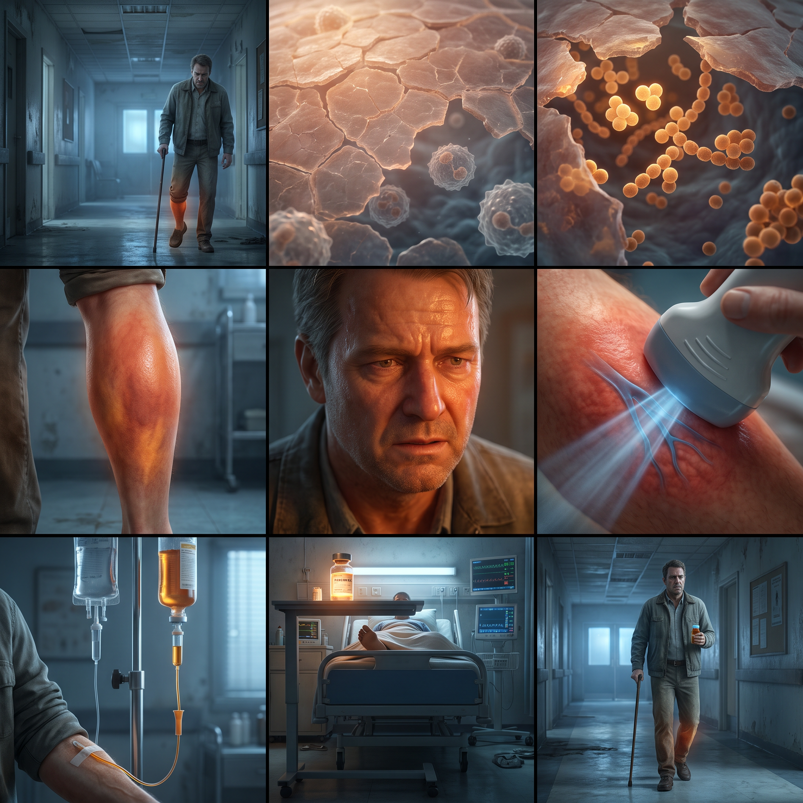
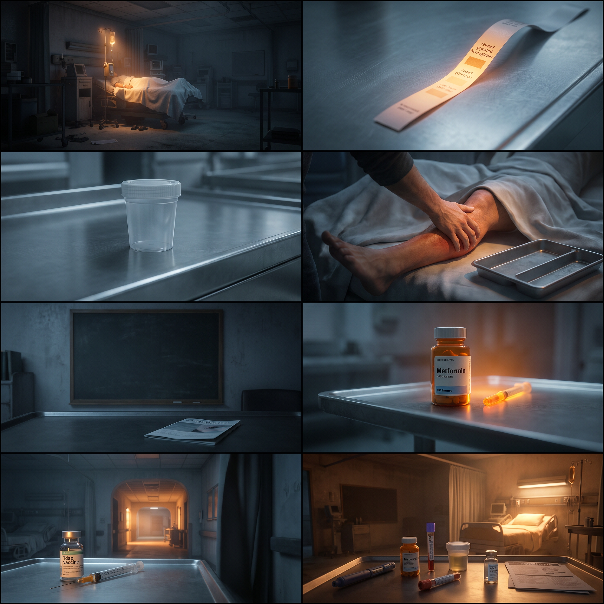
Shortness of Breath - Pediatrics · 16-month-old girl, sudden SOB after peanuts · 2026-07-29 | **Score:** 69.66% (Avg 75.0%) | **Patient:** 16-month-old girl, sudden SOB after peanuts
A 16-month-old finds an open peanut container. One breath later the nut is in the right main bronchus (straighter, wider path; most common lodge site). Partial obstruction behaves like a check valve: inspiration pulls the airway open enough for air to sneak past; expiration narrows the lumen around the foreign body so air cannot leave. The downstream lung hyperinflates. On film that reads as ipsilateral lucency and volume, sometimes with contralateral mediastinal shift. No white peanut silhouette, because organic matter is radiolucent.
Contrast with last night's COPD film: there, both diaphragms flatten from global air trapping. Here, trapping is one side only. Same word "hyperinflation," different geometry, different disease.
URI for a week is the distractor. Viral wheeze is usually bilateral and gradual. This story is abrupt and witnessed. Exam (missed) would have sealed it: unilateral decreased breath sounds, wheeze or stridor lateralizing right. That is why chest/lungs and HEENT are not optional checkboxes on CCS.
Treatment is mechanical. Rigid bronchoscopy is diagnosis and cure. You ordered it, peanuts came out of the right mainstem, parents grateful, timing perfect. Treatment scored 90.91%. Diagnosis scored 37.5% because the survey (lungs, HEENT, heart, abdomen, pulse ox) never got checked, and fluids plus floor transfer after extraction were skipped.
Early epinephrine and continuous albuterol were the anaphylaxis/asthma fork. Fair instinct when "peanut" and "distress" share a sentence. Without hives, facial swelling, or diffuse bilateral wheeze, the machine is a nut in a tube, not IgE. Those orders did not sink you because the scope still landed on time.
Unilateral findings localize the FB before imaging. Highest-yield PE miss.
Clears epiglottitis/croup/RPA and looks for visible FB.
Full toddler survey; BP 85/55 deserves a cardiac glance.
Obstruction → document SpO2.
Work of breathing raises fluid need; CCS wants it.
Observe on the floor once the airway is clear.
Bronchoscopy. That is the case. CXR ordered and read the trapping pattern. Oxygen on. General appearance. No negative patient updates before the definitive fix. Location mostly right until post-extraction observation should have moved to inpatient.


Short Stature - Pediatrics · 6-year-old girl, short stature · 2026-07-29 | **Score:** 68.86% (Avg 57.4%) | **Patient:** 6-year-old girl, short stature
Turner syndrome is usually 45,X (or mosaic). The lost X removes genes needed for ovarian maintenance and normal linear growth. Streak gonads. Short stature. The body shape: webbed/thick neck, shield chest, wide-spaced nipples.
The same developmental field that builds the left heart outflow can fail. Coarctation of the aorta is a discrete narrowing, usually juxtaductal. Upper body sees high afterload. Lower body is underperfused. Arms may run higher pressure than legs. Collaterals open through intercostal arteries. Those vessels dig into the ribs. That is rib notching on CXR. The barium-swallow era "figure-3" sign is the same pinch seen on the aortic contour.
GH levels are often normal. The problem is utilization, not pituitary failure. So you still give growth hormone. Later, estradiol for puberty.
Rib notching / figure-3 — CCS wants this screen with ECG before echo
Turner short stature treatment + future estrogen path
1 negative update before correct treatment → 0%
Full exam including heart. ECG. Echo. Karyotype. Cardiothoracic surgery consult. Clean appropriateness and location/sequence. Above average overall.


· 2026-07-26
The prostate is a lipid-rich gland with a pH gradient (acidic prostatic fluid vs alkaline plasma). Drug penetration depends on:
- Lipid solubility — must cross the prostatic epithelium
- pKa — must remain non-ionized in both plasma and prostatic fluid
- Protein binding — lower binding = more free drug
Fluoroquinolones (ciprofloxacin) and TMP-SMX meet all three criteria. Beta-lactams (amoxicillin, Augmentin) have poor lipid solubility and poor prostate penetration once acute inflammation resolves. Nitrofurantoin achieves bladder concentrations only — it never reaches prostate tissue, regardless of culture sensitivity.
Duration: 14-28 days. The prostate is a sanctuary site — shorter courses relapse.

Chest Pain - Emergency Medicine · Recent MI survivor, now on DAPT + beta-blocker + statin · 2026-07-25 | **Score:** 68.33% (Avg 66.2%) | **Patient:** Recent MI survivor, now on DAPT + beta-blocker + statin
During a myocardial infarction, cardiomyocytes die. Their intracellular contents — cardiac antigens that the immune system has never seen in the extracellular space — spill out. The immune system encounters these antigens. It mounts a response.
Days to weeks later, that response finds its way to the pericardium. The pericardium shares antigenic epitopes with the myocardium. Antibodies and immune complexes deposit in the pericardial layers. Complement activates. Neutrophils infiltrate. The pericardium becomes inflamed, edematous, and exquisitely painful.
This is Dressler syndrome — or, if it happens earlier (days rather than weeks), peri-infarct pericarditis. The mechanism is the same: autoimmune inflammation driven by exposure to cardiac antigens. It is NOT infectious. It is NOT ischemic. It is the immune system doing what the immune system always does when exposed to novel antigens — it attacks. It just happens to be attacking the tissue surrounding the heart instead of the bacteria it was designed to fight.
The pain is sharp, pleuritic. It's worse when lying supine because the inflamed pericardium stretches against the posterior chest wall. It improves when sitting forward because the pericardium relaxes and the inflamed layers separate slightly. Positional chest pain is pericarditis until proven otherwise.
Post-MI patient with new chest pain. Rule out re-infarction first. Troponin tells you if there's active myocardial necrosis. Pericarditis alone can cause mild elevation, but a significant rise changes management.
Ruled out pneumothorax, widened mediastinum, pleural effusion. Pericarditis can produce a pericardial effusion — CXR shows an enlarged cardiac silhouette if present.
Recent cardiac cath = infection risk. Leukocytosis suggests infectious pericarditis, not autoimmune.
Basic labs for any admission. Renal function matters for drug dosing.
Activity re-triggers pericarditis symptoms. Advise rest until symptoms resolve.
You saw the diffuse ST elevation and PR depression and knew it was pericarditis, not a STEMI. You correctly avoided every NSAID on the list — that's the single most important clinical decision in this case and you nailed it. You gave aspirin (antiplatelet, safe) and acetaminophen. You continued the patient's post-MI medications. No inappropriate orders. Timing, location, sequencing all 100%.


· July 27, 2026
Varicella-zoster virus (VZV) does not leave the body after chickenpox.
After primary infection (chickenpox), VZV travels retrogradely along sensory nerves to the dorsal root ganglia and cranial nerve ganglia, where it enters latency. The viral genome persists as circular episomal DNA inside the neuronal cell body. The host immune system (specifically VZV-specific CD8+ T cells) keeps it suppressed for decades.
Reactivation: the dermatomal march
When cell-mediated immunity wanes (age, stress, immunosuppression), VZV reactivates. It travels anterogradely down the sensory nerve to the skin, producing the characteristic dermatomal vesicular rash. The trigeminal ganglion is the most commonly affected cranial nerve ganglion, with the ophthalmic division (V1) most frequently involved.
The pain comes from two distinct mechanisms
Acute herpetic neuralgia (the rash phase):
- Direct viral cytolysis of keratinocytes
- Inflammatory infiltrate in the dorsal root ganglion
- Hemorrhagic necrosis of the ganglion
- Nociceptor sensitization from local prostaglandins, bradykinin, cytokines
Postherpetic neuralgia (PHN) - pain persisting >90 days after rash resolution:
- Deafferentation pain. The virus destroys large myelinated A-beta fibers. These fibers normally gate pain transmission in the dorsal horn (Melzack and Wall's gate control theory). When A-beta fibers are lost, the gate stays open. C-fiber nociceptive input flows unimpeded to the thalamus.
- Central sensitization. Persistent nociceptive barrage upregulates NMDA receptors in the dorsal horn. The spinal cord becomes hyperexcitable. Non-painful stimuli (allodynia) now trigger pain.
- Ectopic pacemakers. Damaged nerve endings and the cell body in the ganglion develop spontaneous ectopic discharges. Sodium channels (Nav1.7, Nav1.8) accumulate at the injury site, lowering the threshold for spontaneous firing.
This is why gabapentin/pregabalin works for PHN, and carbamazepine does not (first-line)
| Drug | Mechanism | Why right for PHN | Why wrong as first-line |
|---|---|---|---|
| Gabapentin / Pregabalin | Binds alpha-2-delta subunit of voltage-gated calcium channels. Reduces calcium influx into presynaptic terminals. Decreases release of glutamate, substance P, norepinephrine. Dampens central sensitization by reducing excitatory neurotransmitter release in the dorsal horn. | Targets the central sensitization mechanism directly. Reduces spontaneous ectopic firing. | Not a sodium channel blocker. Not for acute nerve firing. |
| Carbamazepine / Oxcarbazepine | Blocks voltage-gated sodium channels (Nav1.7). Stabilizes neuronal membranes. Prevents high-frequency repetitive firing. Stops ephaptic transmission at vascular compression site. | Right for classical trigeminal neuralgia where a blood vessel compresses the trigeminal root entry zone, causing demyelination and ephaptic cross-talk between touch and pain fibers. | PHN is not an ephaptic problem. The sodium channels at the injury site are already upregulated; blocking them helps some, but central sensitization (the dominant mechanism in PHN) is calcium-channel mediated, not sodium-channel mediated. |
| TCAs (amitriptyline, nortriptyline) | Inhibit serotonin and norepinephrine reuptake. Block sodium channels. Antagonize NMDA receptors. | Second-line for PHN. Multimodal: enhances descending inhibitory pathways plus NMDA antagonism at sensitized dorsal horn. | Anticholinergic side effects limit use in elderly. |
| Valproic acid | Enhances GABAergic transmission. | Third-line. GABA enhancement can suppress central sensitization but less targeted than gabapentin. | Teratogenicity, hepatotoxicity, weight gain. |
The key distinction: ephaptic transmission vs deafferentation + central sensitization
Classical trigeminal neuralgia: An artery (usually the superior cerebellar artery) compresses the trigeminal root entry zone. This causes focal demyelination. Touch fibers and pain fibers become adjacent and demyelinated at the compression point. A light touch triggers an ephaptic discharge (electrical cross-talk) into the pain pathway. This produces the characteristic lancinating, electric-shock pain triggered by light touch, wind, shaving, brushing teeth.
Carbamazepine works beautifully here. It blocks the sodium channels at the demyelinated compression site, preventing the high-frequency burst firing that drives the ephaptic cross-talk.
Postherpetic neuralgia: There is no vascular compression and no ephaptic cross-talk. The virus destroyed the A-beta fibers. The dorsal horn is sensitized. The pain is constant burning + paroxysmal stabbing, with allodynia in the affected dermatome. The dominant mechanism is calcium-channel mediated central sensitization. Gabapentin/pregabalin binds the alpha-2-delta subunit and reduces presynaptic neurotransmitter release in the dorsal horn.
Score impact: 66.67% on treatment (treated but suboptimal) You ordered medication, and it was accepted. But CCS deducted points because you did not order gabapentin/pregabalin first. Here's the reasoning: This patient had a herpes zoster outbreak that injured CN V. The timeline (pain starting after shingles) makes this postherpetic neuralgia, not classical trigeminal neuralgia. The distinction matters because:
- Classical trigeminal neuralgia: vascular compression → focal demyelination → ephaptic cross-talk → carbamazepine
- Postherpetic neuralgia: viral ganglion destruction → A-beta fiber loss → central sensitization → gabapentin/pregabalin
The treatment hierarchy for PHN:
By ordering carbamazepine (or another anti-seizure medication that's not first-line for PHN), you got partial credit but lost points for not choosing the evidence-based first-line agent.
The capsacin cream prescribed by urgent care was also anterior treatment: topical capsaicin depletes substance P from C-fiber terminals, reducing nociceptive transmission. It's adjunctive, not primary therapy.
Score impact: Diagnostic orders 42.86% The CCS algorithm wants you to rule out acute infection as a cause of symptoms. While shingles and PHN are post-infectious (not acute infection), CBC is a screening lab expected in nearly every CCS case. In postherpetic neuralgia specifically, you want to check for leukocytosis that might suggest ongoing active zoster rather than resolved PHN, or a secondary bacterial infection of the healed rash site.
Score impact: Diagnostic orders 42.86% Chemistries are standard screening labs. In a patient with PHN being started on gabapentin (renally cleared) or TCAs (cardiotoxic in overdose, metabolized hepatically), baseline renal and hepatic function are prudent. Additionally, electrolyte abnormalities (particularly calcium, magnesium) can cause or exacerbate neuropathic symptoms.

Shortness of Breath — Office · 62M professor, 30 pack-years, EF 35% · 2026-07-25 | **Score:** 64.91% (Avg 70.2%) | **Patient:** 62M professor, 30 pack-years, EF 35%
The Frank-Starling mechanism is the heart's fundamental contractile law: within physiologic limits, the more the ventricular muscle is stretched during diastole, the more forcefully it contracts during systole. More venous return = more stretch = more stroke volume. This works because stretching the sarcomere increases the overlap between actin and myosin filaments, generating more cross-bridge cycling and more force.
In systolic heart failure, the problem is that the pump cannot generate enough force regardless of how much it is stretched. The Starling curve has shifted downward and rightward. At any given filling pressure, the stroke volume is lower than normal. The ventricle dilates to compensate — more preload, more stretch, more volume — but the failing myocardium cannot convert that stretch into effective contraction. The ejection fraction drops below 40%.
The kidneys sense the reduced forward flow and respond exactly as they should in hypovolemia: they activate the renin-angiotensin-aldosterone system. Angiotensin II vasoconstricts. Aldosterone retains sodium and water. The intravascular volume expands. But the heart cannot pump this expanded volume forward. It backs up.
The backward failure explains every symptom this patient has. Fluid accumulates in the pulmonary interstitium — first in the dependent bases during the day, then throughout the lungs when he lies flat at night. The interstitial fluid compresses small airways and activates J-receptors, creating the sensation of dyspnea. When the interstitial pressure exceeds the capacity of the pulmonary lymphatics, fluid transudes into the alveoli and pleural space — Kerley B lines and pleural effusion on CXR.
The forward failure explains why his kidneys are activating RAAS even though he is volume-overloaded. The kidneys do not measure total body volume. They measure effective circulating volume — what the heart is actually delivering to the renal arteries. A failing pump = reduced renal perfusion = RAAS activation = more volume retention = more congestion. This is the vicious cycle of heart failure: the body's attempt to fix the problem makes it worse.
Pillar 2 of GDMT. 34% mortality reduction. Start predischarge after euvolemia achieved.
Pillar 4 of GDMT. 25% reduction in worsening HF/CV death. Class I. Can start inpatient.
Prior MI = secondary prevention. Independent of LDL. High-intensity only.
K+ and eGFR must be checked before spironolactone. You ordered the MRA without checking if it was safe.
Ischemic cardiomyopathy patient with new decompensation — rule out acute ischemia as trigger.
Location 50%. This cannot be managed in the office.
Lifestyle is part of GDMT. Smoking caused the CAD that caused the MI that caused the HF.
CHF + smoking = high risk. Non-negotiable.
Routine preventive and screening
Furosemide IV — correct loop diuretic for volume overload. Spironolactone — correct MRA for EF 35%. Echocardiogram confirmed the diagnosis. CXR showed the typical findings. Physical exam covered the right systems — extremities for edema, HEENT for JVD, heart and lungs. You correctly avoided stress testing during acute decompensation. Treatment 66.67% is solid.


Headache - Neurology · 45F thunderclap headache · 2026-07-29 | **Score:** 64.76% (Avg 66.4%) | **Prior:** 16.92% on 7/28 | **Patient:** 45F thunderclap headache
Why blood irritates the meninges
The meninges are not inert wrapping. The pia and arachnoid are packed with trigeminal and upper cervical nociceptors. When arterial blood dumps into the CSF cisterns, three things hit those nerves at once: (1) mechanical stretch from sudden volume, (2) chemical irritation from hemoglobin breakdown products (oxyhemoglobin → bilirubin cascade releases free radicals and inflammatory mediators), and (3) sterile meningitis physiology (leukocytes and cytokines flood the space). Neck pain and meningismus are not "a feature of SAH." They are those nociceptors firing because blood does not belong in CSF.
Why photophobia
Light does not hurt the eye in isolation. Bright light activates retinal afferents that converge, in the brainstem, with the same trigeminal meningeal pain pathways already screaming from blood in the cisterns. The brain cannot cleanly segregate "meningeal pain" from "light input," so light feels like a knife. Picture a shared junction box: when one wire is shorted by blood, the light wire sparks too. Migraine uses overlapping circuitry. That is why photophobia rides with neck pain and vomiting as one irritative package, not three separate diseases.
Why CT without contrast first (and why contrast can bury the finding)
Acute blood on noncontrast CT is hyperdense (bright) because intact hemoglobin with iron attenuates x-rays. That brightness is the entire diagnostic signal in the basal cisterns, sylvian fissures, and ventricles.
IV contrast is also bright (iodine). Pour bright dye into vessels and soft tissue and you raise the background luminance of the scan. The bright-on-bright problem can wash out or confuse small amounts of subarachnoid blood. Worse: if someone reads "contrast CT head" as a vascular study without a dedicated noncontrast pass, they can miss the bleed entirely (your 7/28 trap: contrast CT called normal → infectious workup).
Contrast is not useless forever. After you see the blood on noncontrast CT, you need a vascular roadmap (CTA, MRA, or catheter DSA) to find the aneurysm morphology. That is a different question: "where is the hole," not "is there blood."
Why the next step is NOT MRI to "find the clot in the artery"
SAH from aneurysm is usually arterial wall failure, not an occlusive clot sitting in a lumen waiting for an MRI. You are looking for a bulge (aneurysm) that ruptured. CTA/MRA/DSA map the lumen and the sac. MRI/MRA can help in select cases, but CCS and real neurocritical care after a positive noncontrast CT go to vascular imaging + neurosurgery, not "MRI for clot." Thinking "clotted arteries" steers you toward ischemic stroke logic. Wrong physics.
What an aneurysm depends on (why ACom, why 4 mm can kill)
An aneurysm is a focal failure of the arterial wall under pulse pressure. It depends on:
- Wall structure — media and internal elastic lamina thinned or defective (congenital weakness, smoking, hypertension remodeling).
- Hemodynamic stress — branch points and communicating segments (anterior communicating artery is a classic high-shear junction). Flow direction changes; wall sees oscillatory stress; the bulge grows where stress peaks.
- Size and shape — larger and irregular sacs rupture more often, but small aneurysms still rupture. A 4 mm ACom sac is enough. Do not wait for "giant."
- Multiplicity — 20–30% of SAH patients harbor more than one aneurysm. That is why vascular imaging must map the whole circle of Willis before you clip or coil the wrong sac.
Connecting thread for this 45F
Thunderclap (sudden arterial jet into CSF) → meningeal nociceptors → neck pain + photophobia + vomiting → noncontrast CT shows bright blood + ACom sac → CTA/DSA to plan clip/coil → nimodipine (vasospasm days later is delayed ischemia, different clock) → ICU monitoring because the next hour can rebleed or crash.
The pia and arachnoid are packed with trigeminal and upper cervical nociceptors. Arterial blood in the CSF cisterns hits those nerves three ways at once: sudden volume stretch, chemical irritation from hemoglobin breakdown (oxyhemoglobin to bilirubin with free radicals and cytokines), and sterile meningitis physiology. Neck pain is not a checkbox feature. It is those nociceptors firing because blood does not belong in CSF.
Bright light activates retinal afferents that converge in the brainstem with the same trigeminal meningeal pain pathways already screaming from blood in the cisterns. The brain cannot cleanly separate meningeal pain from light input, so light feels like a knife. Shared junction box: short one wire with blood, and the light wire sparks too. That is why photophobia rides with neck pain and vomiting as one irritative package.
Acute blood is hyperdense (bright) on noncontrast CT because intact hemoglobin iron attenuates x-rays. That brightness is the diagnostic signal in the cisterns and fissures. IV contrast is also bright (iodine). Bright-on-bright can wash out small SAH. Your 7/28 trap: contrast CT called normal, then infection workup. Contrast comes later as CTA for the vessel map. Different question: is there blood vs where is the hole.
Aneurysmal SAH is arterial wall failure, not an occlusive clot sitting in a lumen waiting for MRI. You need a vascular roadmap (CTA, MRA, or catheter DSA) of the bulge that ruptured. Thinking clotted arteries is ischemic-stroke logic. Wrong physics for this case.
Focal wall failure under pulse pressure: thinned media/elastic lamina, high shear at branch points (ACom is a classic junction), size/shape (small sacs still rupture), and multiplicity (20-30% have more than one aneurysm). Map the whole circle before you clip or coil the wrong sac.
Noncontrast CT already proved blood and hinted ACom. Pre-op vascular imaging maps size and morphology, finds which sac bled if multiples, and decides clip vs coil. DSA is often the treatment itself (coiling in the same session). Skipping this is leaving the roadmap blank after you found the crash site.
SAH can crash with arrhythmia or neurogenic stunned myocardium. Continuous cardiac monitoring is surveillance for a brain catastrophe that talks to the heart through catecholamine surge.
Deterioration can mean airway loss. SpO2 is mandatory continuous data, not optional. Same surveillance bundle as the cardiac monitor.
Pain drives sympathetic surge, hypertension, and agitation, which raise ICP more than carefully titrated IV opioid. The old myth that opioids always raise ICP comes from oversedation and CO2 retention, not from appropriate analgesia. Pain untreated is the ICP problem.
Vomiting raises ICP through straining and distress. Ondansetron treats the nausea without the tardive-dyskinesia baggage of dopamine antagonists. Comfort here is physiology, not courtesy.
Aneurysmal SAH is ICU care: rebleed risk, airway, BP, neuro checks. Staying in ED or office after the diagnosis is the wrong location for the next dangerous hour.
Noncontrast CT. Neuro + neck exam. Basic labs, coags, type & screen, EKG. Neurosurgery. Timing clean. Huge jump from 17% → 65%.
Chest Pain - Emergency Medicine · · 2026-07-25 | **Score:** 64.12% (Avg 79.8%) | **Diagnosis:** Type A Aortic Dissection
The aortic wall has three layers: intima (thin endothelial lining), media (thick smooth muscle and elastin), and adventitia (outer connective tissue). The media is the structural layer. Chronic hypertension damages it — smooth muscle cells degenerate, elastin fibers fragment, and the wall weakens.
A dissection begins with an intimal tear. Blood at systemic pressure (180 mmHg systolic in this patient) enters through the tear and splits the media longitudinally. This creates two lumens: the true lumen (original) and the false lumen (blood dissecting through the media).
The force driving the dissection forward is dP/dt — the rate of pressure rise in the left ventricle during systole. It's not just the absolute pressure. It's how fast the pressure hits the aortic wall. Each heartbeat is a hammer blow tearing the flap further down the aorta.
When the dissection involves the ascending aorta, it's Type A (Stanford classification). This is lethal for three reasons:
- Retrograde propagation into the coronary ostia — the dissection flap covers the coronary artery openings → myocardial infarction (not plaque rupture, mechanical occlusion)
- Disruption of the aortic valve — the flap undermines the commissures where the valve cusps attach → acute aortic regurgitation (the new diastolic murmur)
- Rupture into the pericardium — blood dissects through the adventitia into the pericardial sac → cardiac tamponade → death
This patient already had aortic regurgitation. The valve was already involved. Tamponade was the next step.
The entire treatment. Type A = OR. Never ordered.
Pain unchecked → sympathetic surge → dP/dt rises → dissection propagates
Minor — oxygenation check in distressed patient
- Echo showing type A dissection with AR
- Troponin 0 — not ACS
- Correctly avoided aspirin
- Beta-blocker + nitroglycerin for BP control
- PT/PTT, type/screen, IV access — pre-op prep
- Moved out of ED (thought process was right)


Abdominal Pain — Emergency Medicine · 35-year-old male, accountant · 2026-07-23 | **Score:** 63.8% (Avg 62.1%) | **Patient:** 35-year-old male, accountant
The liver has 500 functions. When it fails, only two matter acutely:
1. Detoxification. The liver clears ammonia, bilirubin, drugs, and toxins from the portal circulation. When hepatocytes die, ammonia accumulates. Ammonia crosses the blood-brain barrier and impairs astrocyte function. Neurons can't maintain their resting potential. Confusion, asterixis, then coma. This is hepatic encephalopathy.
2. Synthetic function. The liver makes albumin, clotting factors (II, VII, IX, X — vitamin K-dependent), and complement. When synthesis fails, albumin drops → third-spacing and edema. Clotting factors drop → coagulopathy. INR rises. The patient can bleed from anywhere.
AST 3117, ALT 2362 tell you the degree of hepatocyte necrosis. These enzymes live inside hepatocytes. When the cell membrane ruptures, they spill into the blood. The higher the number, the more cells dying per minute. These are not "slightly elevated." These are "the liver is being dismantled in real time."
Total bilirubin 23.7 tells you the liver has lost its ability to conjugate and excrete bilirubin. Direct bilirubin is high because the hepatocytes can't pump it into bile. Indirect bilirubin is high because the surviving hepatocytes are overwhelmed. Jaundice at 23.7 is deep — the sclerae are mustard, the skin is saffron. This patient looks like a highlighter.
Must rule out APAP toxicity in any patient with AST/ALT in thousands
Synthetic liver function — guides prognosis and transfusion
Synthetic function marker
Fever + aspiration pneumonia → rule out bacteremia
Piperacillin/tazobactam or ceftriaxone + metronidazole
Life-saving antidote for acetaminophen toxicity
- CBC, CMP, LFTs, ABG
- CXR showed aspiration pneumonia
- Ondansetron, IV fluids, oxygen


· 2026-07-26
Pasteurella multocida (cat oral flora — always present)
Pasteurella lives in the oropharynx of 70-90% of cats. It is a Gram-negative coccobacillus that uses a virulence polysaccharide capsule to resist phagocytosis. When inoculated deep into tissue by a cat's needle-sharp teeth, it causes a rapidly progressive cellulitis within 12-24 hours -- one of the fastest onsets of any bite pathogen.
Why Pasteurella matters: If a cat bite looks infected at 24 hours, it is almost certainly Pasteurella. Ampicillin and beta-lactams cover it well. But Pasteurella is never alone in a bite that sat for three days.
Pseudomonas aeruginosa (secondary invader — environment)
Pseudomonas is not normal cat oral flora. It is an environmental organism (soil, water, sinks, hospital drains) that enters wounds secondarily. In this case, the 3-day delay, moist wound conditions, and necrotic tissue created a perfect Pseudomonas niche.
The green color comes from pyocyanin — a blue-green phenazine pigment that Pseudomonas produces through the Phz operon. Pyocyanin is not just cosmetic. It is a virulence factor: it generates reactive oxygen species that damage host tissue, impairs ciliary function, and inhibits lymphocyte proliferation.
Why you MUST cover Pseudomonas here: The green discharge signals Pseudomonas colonization. If you pick Augmentin (amoxicillin-clavulanate) — the most common "cat bite antibiotic" — you will fail. Pseudomonas has intrinsic resistance to amoxicillin-clavulanate through three mechanisms:
- Chromosomal AmpC beta-lactamase — not inhibited by clavulanate
- Low outer membrane permeability — beta-lactams cannot penetrate
- Efflux pumps (MexAB-OprM) — actively expels drugs that do get in
This is why pip-tazo works: piperacillin is a strong enough beta-lactam to overcome efflux, AND tazobactam irreversibly inhibits AmpC.
Bacteroides fragilis (anaerobe — oral flora)
Bacteroides is a Gram-negative anaerobe that thrives in the low-oxygen environment of a deep puncture wound. It produces foul-smelling short-chain fatty acids (butyrate, succinate) and has a potent polysaccharide capsule that is its primary virulence factor — the capsule triggers abscess formation.
Key treatment point: Bacteroides is always resistant to beta-lactams without beta-lactamase inhibitor coverage. It produces its own beta-lactamases. Metronidazole is the gold standard for anaerobic coverage, but pip-tazo and carbapenems also work.
Streptococcus anginosus group (oral flora)
The anginosus group (S. anginosus, S. constellatus, S. intermedius) are normal oral commensals. They are microaerophilic and facultatively anaerobic. In deep tissue, they form abscesses — S. intermedius in particular has a strong association with abscess formation in the brain and liver, though here it is in the leg.


Abdominal Pain - Pediatrics · 2-year-old boy · 2026-07-23 | **Score:** 62.14% (Avg 69.9%) | **Patient:** 2-year-old boy
Lead is a metal that nature never intended to be inside a human body. But it looks enough like calcium, zinc, and iron that the body's machinery can't tell the difference.
Picture a heme synthesis factory. Two stations:
Station 1 — ALA dehydratase. This enzyme needs zinc. Lead slides into the zinc-binding pocket because its ionic radius is close enough. The enzyme stops working. ALA — the intermediate substrate — accumulates. You can measure it in urine. It's an indirect sign that lead has shut down this station.
Station 2 — Ferrochelatase. The final step. Iron must be inserted into the protoporphyrin ring to make heme. Lead displaces iron at this step. Iron is right there, available, but the door is locked. Free erythrocyte protoporphyrin (FEP) skyrockets. The RBC comes out microcytic — low MCV — even though iron stores are present.
So you have a microcytic anemia that looks like iron deficiency, but it isn't. The iron is there. It just can't get into the ring.
Now the basophilic stippling. This is the pathognomonic finding. Lead also inhibits pyrimidine 5'-nucleotidase. Ribosomes — the protein factories inside the RBC — fail to degrade properly. They clump. Under the microscope, you see coarse blue dots scattered through the red cell. Iron deficiency never does this. If you see basophilic stippling in a microcytic anemia, you are looking at lead toxicity until proven otherwise.
GI lead chips before chelation — critical miss
Cerebral edema with encephalopathy
Clenches the diagnosis at 80 mcg/dL
Coexisting deficiency, hold iron during BAL
Seizure control — benzos first-line
Stayed in ED too long
0% on prevention
- IV fluids
- Full exam
- CBC showed basophilic stippling


Generalized Swelling - Pediatrics · 5-year-old girl, generalized swelling · 2026-07-28 | **Score:** 61.14% (Avg 75.2%) | **Patient:** 5-year-old girl, generalized swelling
Picture the glomerulus as a coffee filter lined with podocyte foot processes. In minimal change disease, those feet efface. The slit diaphragm fails. Albumin, which should stay in the blood, floods into the urine.
Blood oncotic pressure falls. Starling forces flip. Water leaves the vascular space into the interstitium. Face first in the morning (recumbent redistribution), legs by day. That is not "heart failure in a 5-year-old." That is hypoalbuminemic edema.
The liver panics and dumps lipoproteins. Hyperlipidemia appears. Complements stay normal. That normal C3/C4 is how you separate idiopathic/MCD from lupus (low C3+C4) and MPGN (low C3, normal C4).
Document the edema the HPI already named
Infection/heme screen before steroids
Completes the nephrotic tetrad
Separates idiopathic from lupus/MPGN
Quantitative criterion (>~1020 mg at her weight)
Hypoalbuminemia is the other diagnostic pillar
UA with proteinuria. Steroid therapy with clinical improvement by day 4. Perfect timing, appropriateness, and office sequencing. Treatment weight carried you to 61%.


Drowning - Pediatrics · Pediatric, found submersed, pulseless, apneic, hypothermic · July 27, 2026
The Pathophysiology Chain
- Submersion → breath-holding → laryngospasm. The first thing that happens is not aspiration. It's involuntary breath-holding followed by laryngospasm. The glottis slams shut. For 30-90 seconds, no water enters the lungs. But no air enters either. Oxygen falls. CO₂ rises.
- Hypoxic loss of consciousness → laryngospasm breaks. When the brainstem can no longer sustain the spasm, the glottis relaxes. Water enters the airway. The patient aspirates.
- Aspiration → surfactant washout → alveolar collapse. Water in the alveoli dilutes and washes out surfactant. Without surfactant, alveoli collapse at end-expiration. The lung stiffens. Compliance drops. Ventilation-perfusion mismatch explodes. This is ARDS in fast-forward.
- Hypoxemia → bradycardia → cardiac arrest. The heart of a child is oxygen-dependent. An adult heart can run on its own reserves for a few minutes. A child's heart cannot. When PaO₂ drops below about 30 mmHg, the myocardium fails. Bradycardia is the pre-terminal rhythm. Asystole follows. This is why PALS says: if the heart rate is below 60 with poor perfusion, start CPR. You do not wait for asystole. Bradycardia in a hypoxic child IS a cardiac arrest.
- Cold water → hypothermia → cold diuresis → volume depletion. Cold water immersion triggers peripheral vasoconstriction, shunting blood centrally. The hypothalamus perceives this as volume overload — atrial stretch receptors fire. ADH release is suppressed. The kidneys dump water. The patient becomes hypovolemic despite drowning.
- Pulmonary edema on CXR. The "drowning lung" on chest X-ray shows diffuse, homogeneous infiltrates. Lung markings blur. Heart borders disappear into the edema. This is direct alveolar injury from aspirated water combined with surfactant dysfunction. It is indistinguishable from ARDS on imaging.
- Warming blanket — external rewarming
- ECG — recognized the need to check cardiac rhythm
- CBC + CMP/LFT — baseline labs in an emergency
- Physical exam triage — general appearance, chest/lungs, CV, abdomen, etc. — but these should come AFTER the initial resuscitation
- Perfect timing — no negative updates before treatment
- No inappropriate invasive orders
- Correct sequencing


Fever - Internal Medicine · 45-year-old female, fever, malaise, substance use history · 2026-07-27 | **Score:** 60.33% | **Diagnosis:** Infective Endocarditis
The Endocarditis Cascade
- Endothelial injury opens the door. IV drug use introduces particulate matter (talc, cotton fibers, bacteria) directly into venous circulation. These particles strike the tricuspid valve. The endothelium is damaged. Platelets and fibrin deposit at the injury site. This is the nonbacterial thrombotic endocarditis (NBTE) — a sterile platelet-fibrin clot on a valve.
- Bacteremia seeds the clot. Bacteria circulating in the blood (from contaminated needles, skin flora, or distant infections) land on the NBTE. They adhere via surface proteins (MSCRAMMs in Staph, FimA in Strep). They multiply. They encase themselves in a biofilm — a polysaccharide matrix that shields them from antibiotics and immune cells.
- Vegetation grows. The growing mass of bacteria, fibrin, platelets, and inflammatory cells is called a vegetation. It sits on the valve, continuously shedding bacteria into the bloodstream. Every heartbeat sends a shower of microbes to the brain, kidneys, spleen, skin, and lungs.
- Embolic shower. Pieces of the vegetation break off. They travel. They lodge in:
- Brain — stroke, mycotic aneurysm
- Kidneys — hematuria, renal infarcts, immune complex glomerulonephritis
- Skin — Janeway lesions (septic emboli), Osler nodes (immune complex)
- Spleen — splenic infarcts, abscess
- Immune complex disease. The body makes antibodies against the bacteria. Antigen-antibody complexes deposit in small vessels — kidneys (glomerulonephritis), skin (Osler nodes, splinter hemorrhages), eyes (Roth spots). This is why endocarditis is not just an infection — it is a systemic vasculitis.
What you did: Blood cultures.
What you missed: Bacterial culture. This is a CCS terminology trap. In the real world, "blood culture" is the correct order for endocarditis — you draw 3 sets from 3 different venipuncture sites, 15 minutes apart, before starting antibiotics. Each set = one aerobic bottle + one anaerobic bottle. "Bacterial culture" in the CCS menu usually refers to culture from a specific site — wound, sputum, tissue, fluid. If the patient has a wound or a specific collection, you culture that too.
The first-principles point: Endocarditis is a bloodstream infection hitting a valve. The pathogen is in the blood. You need blood cultures to identify it. But you also need cultures from any portal of entry — if the patient has a wound, abscess, or cellulitis at an injection site, culture that too. It may grow the same organism and confirm the source.
Why the CCS marked you wrong: The CCS bank expects both "blood culture" AND "bacterial culture" as separate orders. Blood cultures catch the bacteremia. Bacterial culture catches the source. Together they tell you: the bug in the blood is the same bug at the injection site, confirming the portal of entry.
Why test for syphilis in endocarditis? Treponema pallidum, the spirochete that causes syphilis, has a tropism for blood vessels. In tertiary syphilis, it invades the vasa vasorum of the aorta, causing endarteritis obliterans — inflammation and scarring of the vessel wall. This weakens the aortic wall, leading to:
- Syphilitic aortitis — dilation of the ascending aorta
- Aortic regurgitation — from dilation of the aortic root pulling the valve leaflets apart
- Coronary ostial stenosis — from scarring around the coronary origins
A 45-year-old with a murmur and fever could have syphilitic aortitis with superimposed bacterial endocarditis. You need to know if the valve was already damaged by syphilis before the bacteria landed on it.
Also: IV drug users are at higher risk for syphilis due to exchange of sex for drugs, inconsistent condom use, and overlapping social networks. The CDC recommends routine syphilis screening in all patients with risky behaviors.
Testing: RPR (nontreponemal, screening) + confirmatory FTA-ABS or TPPA (treponemal, specific). If positive, you need a lumbar puncture to rule out neurosyphilis.
Why urinalysis in endocarditis? The kidneys are the most commonly affected organ in endocarditis, through three mechanisms:
What UA shows in endocarditis:
- Microscopic hematuria — dysmorphic RBCs + RBC casts = glomerulonephritis; isomorphic RBCs = embolic infarct
- Proteinuria — usually subnephrotic (500 mg-2 g/day) from immune complex deposition
- Pyuria — sterile pyuria from interstitial nephritis or emboli (not UTI)
The first-principles punchline: UA is a $5 test that tells you whether the kidneys are already being showered by emboli. You don't need a renal biopsy to know the valves are throwing clots. You just need a dipstick.
Can a 45-year-old be pregnant? Yes. Perimenopause is not menopause. A 45-year-old woman still has ovarian follicles. She may have irregular cycles, but she still ovulates — unpredictably. The oldest verified natural pregnancy was at age 59.
Why it matters in endocarditis:
- Antibiotics. Gentamicin and doxycycline are pregnancy category D. Vancomycin is category C. Ceftriaxone is category B. You need to choose the right regimen.
- Anticoagulation. Endocarditis patients may need anticoagulation for embolic stroke or mechanical valve. Warfarin crosses the placenta. Heparin/LMWH are safer but still need monitoring.
- Surgery. If she needs valve replacement, pregnancy changes the surgical risk calculus — timing, anesthesia, bypass considerations.
- Substance use in pregnancy. If she is pregnant and using IV drugs, this is a mandatory-report situation in many states. Social work, child protective services, and MFM all need to be involved.
The first-principles punchline: Every woman of childbearing age — and 45 is still childbearing age — gets a pregnancy test before you commit to a treatment plan. It costs $10 and changes everything.
Why LR in sepsis/endocarditis? Normal saline (0.9% NaCl) has 154 mEq/L of chloride. Human plasma has 103 mEq/L. When you pour liters of NS into a septic patient, you create a hyperchloremic metabolic acidosis — the strong ion difference drops, bicarbonate falls, pH falls. Lactated Ringer's has 109 mEq/L of chloride (close to plasma). It's a balanced crystalloid. The lactate is metabolized by the liver to bicarbonate (via the Cori cycle), so it actually provides a buffer.
The evidence (SMART trial, 2018): In 15,802 ICU patients, balanced crystalloids (LR or Plasma-Lyte) reduced MAKE30 (major adverse kidney events at 30 days) compared to saline: 14.3% vs 15.4%. The absolute difference is small, but in endocarditis — where kidneys are already getting pounded by emboli, immune complexes, vancomycin, and gentamicin — every nephron counts.
The first-principles punchline: LR is not wrong for endocarditis resuscitation. It's actually preferred in sepsis guidelines. The chloride load from NS causes renal vasoconstriction via tubuloglomerular feedback. LR spares the kidney. In a disease where the kidney is already under siege, that matters.
Thin peptidoglycan + outer membrane
Decolorizes, takes up safranin
Pseudomonas, E. coli, Klebsiella, HACEK
"One color is better for endocarditis." You're right. Gram-positive is better. Here's why. The Gram stain divides bacteria into two worlds: In IV drug use endocarditis, Staphylococcus aureus is king — 60-70% of cases. It's a Gram-positive coccus in clusters. Strep viridans (Gram-positive coccus in chains) is the most common cause in native valve endocarditis without IVDU. Enterococcus (Gram-positive coccus in pairs/chains) is the third most common.
Why Gram stain matters minutes after you draw blood:
- Gram-positive cocci in clusters → Staph → start vancomycin (until MSSA confirmed, then nafcillin/oxacillin)
- Gram-positive cocci in chains → Strep/Enterococcus → start penicillin G + gentamicin (or ceftriaxone)
- Gram-negative rods → HACEK or Pseudomonas → start ceftriaxone + gentamicin
- No organisms → culture-negative endocarditis → think Coxiella, Bartonella, Brucella
The Gram stain result comes back in hours. Cultures take days. You don't wait 72 hours to pick the right antibiotic. You narrow within hours based on what color the bug turns.
The first-principles punchline: The Gram stain is the fastest antibiotic stewardship tool in medicine. In endocarditis, where the wrong antibiotic means the vegetation keeps growing while you wait for cultures, Gram stain saves valves.
The first-principles perspective: In the real world, a substance abuse consult is excellent medicine. IV drug use is a chronic relapsing disease, and endocarditis is its complication. Without addressing the addiction, the patient will be back with a new vegetation in 6 months.
Why the CCS marks it wrong: CCS cases are about the acute presentation. You are in the ED or the inpatient ward managing the active infection. The substance abuse consult is an outpatient/psychosocial intervention — it does not change the acute management of endocarditis. The CCS algorithm treats it as a non-acute order, like a dietary consult or social work referral on the first day of admission.
What you should do instead (CCS logic):
- Treat the infection first: antibiotics, blood cultures, echo
- Once stabilized, the admitting team can order addiction medicine
The real-world counterpoint: In a good hospital, addiction medicine is consulted on day 1 of admission alongside ID and cardiology. Starting buprenorphine in the hospital reduces discharge against medical advice, reduces readmission, and reduces mortality. The CCS is wrong on this one — but you play the game by the game's rules.
- Antibiotics — you started empiric coverage
- Recognition of endocarditis — you identified the high-risk presentation
- Ringer's lactate — correct fluid choice for sepsis resuscitation (better renal outcomes than NS)


Chest Pain - Internal Medicine · · 2026-07-25 | **Score:** 60.33% (Avg 86.9%) | **Setting:** Office
The esophageal hiatus is an opening in the diaphragm at T10. The esophagus passes through it, and the phrenoesophageal membrane anchors the gastroesophageal junction in place. This membrane is a fibroelastic sheet that attaches the esophagus to the diaphragm — it's strong enough to hold the stomach below the diaphragm while allowing the esophagus to slide a few centimeters during swallowing.
In a Type I (sliding) hiatal hernia, the phrenoesophageal membrane weakens. Increased intra-abdominal pressure — from obesity, pregnancy, ascites, chronic cough — pushes the gastric cardia upward through the hiatus into the chest. The GE junction moves above the diaphragm. The result: the lower esophageal sphincter (LES) loses its diaphragmatic crural support.
The crural diaphragm normally pinches the LES from the outside, reinforcing the sphincter's own tone. When the GE junction herniates, that pinch is lost. The LES tone drops. Acid refluxes freely from the stomach into the unprotected esophagus. Heartburn. Regurgitation. Over time, chronic acid exposure causes esophagitis, stricture formation, and in some patients, Barrett's esophagus.
That's why dysphagia matters. It means the esophagus is no longer just inflamed — it's narrowed. Food physically cannot pass. That narrowing could be a benign peptic stricture. Or it could be a malignancy. You cannot tell without looking.
Dysphagia = must visualize. Cannot confirm Type I vs II-IV without imaging. Possible stricture or malignancy left unevaluated.
Chest pain = rule out cardiac. Fast, cheap, noninvasive. Never skip this.
Screen for anemia from chronic erosive esophagitis
Renal function baseline for medication management
Overweight patient — weight loss is GERD treatment and prevention
- Treatment: omeprazole is correct for Type I GERD
- Timing: 100%, Location: 100%, No inappropriate orders


Presenting with early morning headaches, nausea, vomiting, papilledema · July 27, 2026
The tumor is a space-occupying lesion
A diffuse astrocytoma is a primary brain tumor arising from astrocytes — the glial cells that support, nourish, and maintain the blood-brain barrier. It infiltrates brain parenchyma without a clear boundary. You can't shell it out like a meningioma. The tumor cells weave between normal neurons.
Two things happen mechanically:
1. Mass effect. The tumor occupies volume inside the fixed cranial vault. The Monro-Kellie doctrine states that intracranial volume is fixed (brain 80%, blood 10%, CSF 10%). Add a tumor, and something must give. Initially, CSF is displaced (ventricles compress). Then venous blood is squeezed out. When those compensatory mechanisms exhaust, intracranial pressure rises sharply.
2. Vasogenic edema. The tumor disrupts the blood-brain barrier. Astrocytoma cells have leaky tight junctions. Plasma proteins and water escape into the extracellular space of the brain. This edema adds to the mass effect and is exquisitely responsive to corticosteroids.
Why the symptoms happen at these specific times
Early morning headache: ICP follows a circadian rhythm. Lying flat all night reduces cerebral venous drainage (the jugular veins are gravity-dependent in the upright position). CO2 rises slightly during sleep, causing cerebral vasodilation. The combined effect peaks ICP around 4-6 AM. The patient wakes up with a headache. It improves after being upright for an hour. This pattern — worse in the morning, better with upright posture — is pathognomonic for elevated ICP.
Nausea and vomiting: The area postrema in the medulla (the chemoreceptor trigger zone) sits outside the blood-brain barrier. It's exquisitely sensitive to pressure. Elevated ICP irritates it directly. This is not GI nausea — it's central nausea. It's often projectile because the medullary vomiting center fires without warning.
Papilledema: The optic nerve sheath is continuous with the subarachnoid space. Elevated ICP transmits along the CSF surrounding the optic nerve, compressing the central retinal vein and causing venous engorgement, disc elevation, and blurred margins on fundoscopy. It's a direct window into ICP.
Why dexamethasone (not prednisone, not hydrocortisone)
| Steroid | Glucocorticoid activity | Mineralocorticoid activity | Why |
|---|---|---|---|
| Dexamethasone | High (25-30x cortisol) | Very low (~0) | Maximum anti-inflammatory effect on BBB with no fluid retention. First-line for cerebral edema. |
| Prednisone/prednisolone | Moderate (4-5x cortisol) | Moderate | Significant sodium/water retention → worsens ICP. Shorter half-life. |
| Hydrocortisone | Low (1x cortisol) | High | Too much mineralocorticoid effect. Unsuitable for long-term edema management. |
| Methylprednisolone | High (5x cortisol) | Low | Comparable efficacy but less data for cerebral edema specifically. |
Dexamethasone stabilizes the blood-brain barrier. It reduces vasogenic edema. It's not treating the tumor — it's creating space inside the skull while the surgeons and oncologists plan definitive treatment. The typical starting dose is 4-8 mg IV every 6 hours.
The LP trap
A lumbar puncture in a patient with elevated ICP from a mass lesion can create a pressure gradient between the cranial and spinal compartments. CSF drains from below. The brain herniates downward — transtentorial (uncus through tentorium, compresses CN III and midbrain) or tonsillar (cerebellar tonsils through foramen magnum, compresses medulla). Fatal in minutes. This is the single most penalized order on USMLE for neuro cases. You correctly avoided it.
She has a brain tumor causing mass effect and papilledema. Steroids are not optional. They're the first treatment before anything else. Dexamethasone 4-8 mg IV q6h reduces vasogenic edema, buys time, and prevents neurologic deterioration while awaiting surgery. The CCS explanation spent an entire paragraph explicitly explaining why dexamethasone is superior to prednisone and hydrocortisone. This was the single most important treatment order.
The mechanism (from the attending): Picture the blood-brain barrier as a sieve that's been torn open by the infiltrating tumor. Plasma proteins leak through. Water follows by osmosis. The brain swells inside a closed box. Dexamethasone tightens that sieve. It doesn't fix the hole — but it stops the leak long enough for the surgeon to get in there.
Diffuse astrocytomas are treated with surgery + radiation. This is a multidisciplinary disease. The neurosurgeon debulks. Radiation treats the infiltrating cells that the surgeon can't see. If you consult neurosurgery without radiation oncology, you're sending a patient to the OR without a plan for what happens after.
Medical oncology manages adjuvant chemotherapy (temozolomide) and long-term surveillance. IDH mutation status determines prognosis. WHO grade II astrocytomas with IDH mutation have a median survival of 10-15 years. Without oncology follow-up, you're managing the acute problem and abandoning the chronic disease.
She's nauseated and vomiting from increased ICP. Ondansetron, promethazine, metoclopramide — any of them. Central nausea from area postrema irritation. Treat her symptoms while you work up the cause.
She's going to surgery. Neurosurgery requires general anesthesia. Nothing by mouth. This is a pre-op order that takes two seconds.
Surgery. Blood bank. You ordered PT/PTT but not type and screen. They're a pair. Always together.
She's NPO, awaiting surgery, and started on dexamethasone (which can cause hyperglycemia). Maintenance IVF prevents dehydration. Normal saline or LR.
This patient just learned she has a brain tumor. She needs a conversation about diagnosis, prognosis, treatment options, and what to expect. This is not optional counseling — it's the core of the physician-patient relationship in oncology.
Chemistries. You ordered CBC but not the metabolic panel. Standard pre-op labs include both. The CCS algorithm expects them.
You ordered 12 items. The average high-scorer orders 32. Your Z-score is -1.85. The problem here is not over-ordering — it's severe under-ordering of treatment. You diagnosed correctly and handed off to surgery without managing the patient. The pattern across all your cases is consistent: strong diagnosis, weak treatment. But this case is the extreme. 18.18% on treatment. That's not just missing an anti-emetic. That's missing every supportive and multidisciplinary order.


Pain in Side - Internal Medicine · 85F, dementia, pain in side after a fall, son controls the interview · 2026-07-28 | **Score:** 56.06% (Avg 84.6%) | **Patient:** 85F, dementia, pain in side after a fall, son controls the interview
1. The Distribution Pattern — Why the Neck, Not the Side
A patient who falls onto their side — laterally, as the son described — should have contusions over the lateral thorax, the iliac crest, possibly the greater trochanter. Those are the impact points in a lateral fall. The physics of the fall dictates the distribution: lateral point of contact → lateral bruising.
This patient had contusions on the neck, shoulders, and upper back. Those are NOT lateral impact points. Those are proximal, axial, central. Those are areas that are grabbed, struck, or restrained — not fallen upon. The distribution pattern refutes the mechanism. A grab-mark on the upper arm or neck is centripetal force applied by another person; a fall is centrifugal force applied by gravity. The direction of the bruises tells you the direction of the force. The force came from the center outward, not from the side inward.
Burn wounds in an elderly demented patient follow the same logic. Cigarette burns and scald burns cluster on the upper back and shoulders — areas the patient cannot see or protect. They are inflicted from behind and above, where the caregiver has access and the patient has no defense.
This is the same pattern recognition you use for child abuse: bruises on the ears, neck, torso, and buttocks are abuse until proven otherwise. Bruises on the shins and elbows are play. In elders, bruises on the neck and upper back are abuse until proven otherwise. Bruises on the lateral hip are falls. The distribution is the diagnosis.
2. The Radiographic Timeline — Old + New Fractures
One fall produces one set of fractures. The fracture lines are the same age. They have the same radiographic appearance: acute, non-displaced, with soft tissue swelling.
On this patient's chest imaging — which you did not order — there would be:
- Acute fractures: sharp cortical breaks, minimal or no callus, adjacent soft tissue swelling, point tenderness
- Healing fractures: visible periosteal reaction, bridging callus, rounded fracture edges, no soft tissue swelling
The temporal gap between these fracture sets refutes a single-event mechanism. The patient has been injured before, the body has mounted a healing response, and now she has been injured again. The skeleton is a history book: each fracture line is dated by its callus stage. A rib series with fractures of different ages is the imaging signature of repeated trauma. It is the objective evidence that corroborates the abuse diagnosis and will stand up in court.
Why this matters for CCS: the "chest X-ray" order includes PA, lateral, and rib views. It costs nothing extra to get the rib series at the same time. You get the acute fractures for the acute complaint AND the old fractures for the abuse diagnosis in one order.
3. The Narrated History — When the Caregiver Speaks
Dementia patients cannot give a reliable history. They rely on their caregiver to narrate the events. When the caregiver is the abuser, the narrative is weaponized: "She tripped and fell." This is plausible on its face — elderly people fall. But the injury pattern contradicts the mechanism. The caregiver is shaping the presentation to deflect suspicion.
In the CCS case, the scorer explicitly notes that the son answers all the questions. This is a planted clue. It means: do not trust the history. Examine the patient yourself. Separate the patient from the caregiver when you do the physical exam. If you see contusions in areas inconsistent with the reported mechanism, the mechanism is false. The history is the abuser's alibi.
Risk factors present in this case:
| Factor | Present? | Why it matters |
|---|---|---|
| Cognitive impairment (dementia) | Yes | Cannot report abuse herself |
| Age >80 | Yes | Highest-risk demographic |
| Caregiver answers all questions | Yes | Narrator may be abuser |
| Fractures of different ages | Yes (would have been seen on imaging) | Radiographic proof of repeated trauma |
| Burns + contusions in central distribution | Yes | Classic abuse pattern |
The chief complaint was pain in the side after a fall. You cannot diagnose rib fractures without imaging. More critically: the old-healing + new-acute fracture pattern on the same film is the radiographic proof of abuse. Without imaging, you have a suspicious physical exam but no objective evidence. This is what dropped your diagnostic score to 26.92%.
An 85-year-old trauma patient with tachycardia (HR 120) and hypotension (80/45) needs a CBC. You need to know if she is hemorrhaging, anemic at baseline, or mounting a stress response. The leukocyte differential also screens for infection — another common cause of decline in demented patients who cannot report symptoms.
Frail elderly patients have narrow homeostatic margins. Electrolytes shift fast. Renal function determines what medications she can receive. Liver enzymes screen for hepatic injury from blunt trauma and for chronic alcohol use (another abuse risk factor in caregivers).
Multiple broken ribs hurt. Uncontrolled pain → splinting → shallow breathing → atelectasis → pneumonia → respiratory failure. In an 85-year-old with dementia, this cascade is not theoretical — it is a near-certainty. The mechanism of death from rib fractures in the elderly is not the fracture itself; it is the pulmonary complication from untreated pain. NSAIDs and acetaminophen are first-line because opioids cause sedation and respiratory depression in frail patients — the exact thing you are trying to prevent.
You kept the patient in the Office for the entire case. An abused elderly patient cannot be discharged to the home of the abuser. She needs admission for: (1) protection from further abuse, (2) pain management for multiple rib fractures, (3) workup for other injuries, (4) social services coordination for safe discharge. The office is not equipped for any of these. You lost half the location score because the patient spent the case in the same room as the person who hurt her.
You consulted social services. That is the single most important order in this case — it scores the majority of your treatment points and is the intervention that protects the patient. You examined the skin and documented the contusions and burns. You examined the chest and lungs. You did not order any inappropriate invasive procedures. Your timing and sequencing were correct. You recognized abuse. The problem was what you did NOT do after recognition.
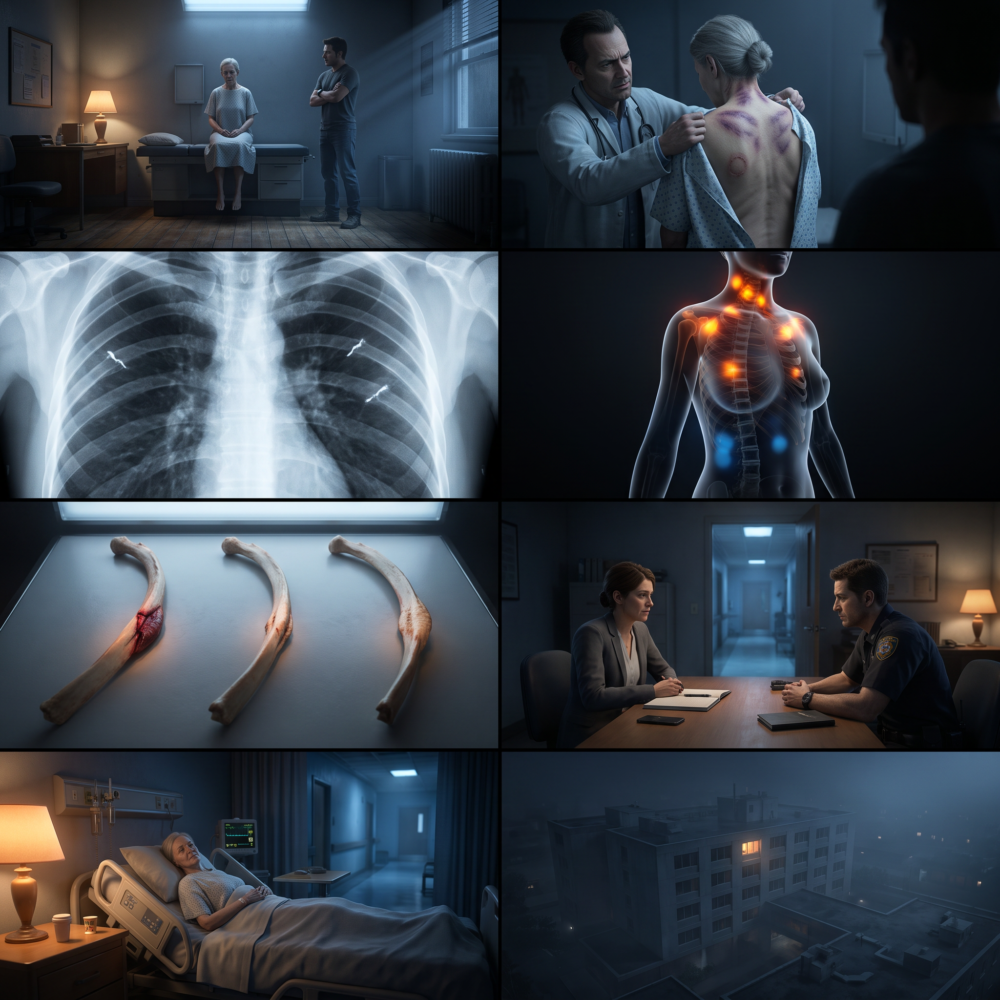
Vaginal Bleeding - OB/GYN · 45F, prune-juice vaginal bleeding, hyperemesis, thought she was entering menopause · 2026-07-28 | **Score:** 55.37% (Avg 74.1%) | **Patient:** 45F, prune-juice vaginal bleeding, hyperemesis, thought she was entering menopause
A complete mole starts with an empty egg. No maternal chromosomes. One sperm duplicates, or two sperm fertilize. Result: diploid 46,XX or 46,XY trophoblast only. No fetus. No amniotic fluid. The villi swell with fluid and look like grapes.
Those trophoblast cells pump out hCG at industrial scale. Levels often clear 100,000 mIU/mL — far above dates. That is why hyperemesis is so severe: the chemoreceptor trigger is flooded.
hCG and TSH share an alpha subunit. Extreme hCG can occupy thyroid TSH receptors. The patient can look thyrotoxic without primary thyroid disease. That is why TSH is not optional — it is the cross-talk check.
The dark prune-juice discharge is oxidized, liquefied blood sitting in the cavity. It is not fresh bright red. It is old blood remodeled by time. When you hear that description with hyperemesis in a woman over 40, the differential narrows hard toward mole.
Ultrasound shows the snowstorm: diffuse hydropic villi filling the cavity, no gestational sac with a fetus. Theca lutein cysts can form from ovarian overstimulation by hCG. Complete moles carry 15–20% risk of gestational trophoblastic neoplasia after evacuation. Partial moles are closer to 1–5%. Surveillance matters.
Imaging gold standard. Snowstorm, no fetus, no fluid, theca lutein cysts. High hCG alone is not enough.
hCG-driven thyrotoxicosis. Baseline before evacuation. Explains why mole patients can look hyperthyroid.
RhoGAM if Rh-negative after evacuation. Alloimmunization prevention.
Post-D&C infection prevention.
Mandatory for the entire serial-hCG monitoring period. A new pregnancy wrecks the surveillance curve. Preventive care: 0%.
Pregnancy loss + GTN risk. Scored support.
Evacuation is a hospital procedure. ED after the decision costs location points (50%).
You examined the pelvis. You ordered quantitative beta-hCG. You got a CBC before a procedure. You corrected dehydration and treated nausea. You called OB/GYN and ordered dilatation and curettage — suction evacuation is both diagnosis and treatment. Endometrial biopsy alone has no role here. You sequenced cleanly. You did not add random invasive noise beyond the chemo question.


Chest Pain - Emergency Medicine · 65-year-old woman · 2026-07-25 | **Score:** 54.96% (Avg 77.8%) | **Patient:** 65-year-old woman
In sinus rhythm, the atria contract. This atrial kick contributes about 20-25% of cardiac output at rest and up to 40% during exercise. More importantly, it empties the left atrial appendage — a blind pouch off the left atrium that is a natural thrombus incubator.
In atrial fibrillation, the atria don't contract. They fibrillate — quiver at 400-600 impulses per minute. The AV node blocks most of these, passing through only some to the ventricles. The ventricular rate becomes irregularly irregular. But the atria themselves are just twitching. No coordinated contraction. No emptying.
Blood pools in the left atrial appendage. Stasis. Endothelial activation. Fibrin deposition. A clot forms.
When the atria eventually contract again — whether spontaneously (as this patient did) or with cardioversion — that clot can be ejected into the systemic circulation. If it goes to the brain: stroke. If it goes to a limb: acute ischemia. If it goes to the gut: mesenteric ischemia.
Rate control manages the ventricular response. Anticoagulation prevents the clot. These are two separate problems that require two separate treatments.
CHA2DS2-VASc = 3. Stroke risk 3-5%/year. OAC reduces by 60-70%. Never ordered.
Baseline before AC. You said this yourself — "check PT/PTT before anticoagulation." But never ordered it.
Renal function drives DOAC choice. Electrolytes may contribute to AF.
Bleeding risk + anemia assessment
AF patient needs rhythm monitoring
Routine physical exam gaps
Substance-induced AF? Cocaine, amphetamines. Patient already on alprazolam.
Minor
Preventive care — every 10 years
- EKG diagnosed AF
- TSH/T3/T4 ruled out hyperthyroid AF
- Cardiology consult
- Focused physical exam including HEENT/neck (thyroid)
- Troponin, CXR, echo
- Timing 100%, location 100%, correct sequencing
Cost 0% on Appropriate Orders. Elective rhythm control for RECURRENT AF — not an ED order for new-onset AF.


Shortness of Breath, Weight Loss, Oily Stools — Office · 3-year-old boy, failure to thrive, oily stools, Pseudomonas pneumonia · 2026-07-25 | **Score:** 52.98% (Avg 66.2%) | **Patient:** 3-year-old boy, failure to thrive, oily stools, Pseudomonas pneumonia
The cystic fibrosis transmembrane conductance regulator — CFTR — is a cAMP-regulated chloride channel on the apical membrane of epithelial cells. It sits on the surface of cells lining the airways, pancreatic ducts, sweat ducts, bile ducts, vas deferens, and intestinal epithelium. When it opens, chloride ions flow out of the cell into the lumen. Water follows chloride osmotically.
In CF, the CFTR gene on chromosome 7 has a mutation — most commonly delta-F508, a three-base-pair deletion that removes phenylalanine at position 508. This misfolds the protein. The quality control machinery in the endoplasmic reticulum recognizes the misfolded protein and targets it for degradation. It never reaches the cell surface.
The result: chloride cannot exit the cell. Water cannot follow. The secretions on every epithelial surface become thick, dehydrated, and sticky.
In the lungs: The airway surface liquid layer thins. Mucociliary clearance fails — the tiny cilia that sweep mucus up and out of the airways beat in a dehydrated film and cannot move the thickened mucus. Bacteria colonize the stagnant mucus. First Staphylococcus aureus, then Haemophilus influenzae, then — almost inevitably — Pseudomonas aeruginosa. Pseudomonas forms biofilms, converts to a mucoid phenotype, and becomes impossible to eradicate. The cycle is: mucus stasis → bacterial colonization → neutrophilic inflammation → neutrophil elastase destroys lung architecture → bronchiectasis → more mucus stasis. This child's CXR showed unilateral hyperinflation and pneumonia. That is the beginning of the end if the cycle is not broken.
In the pancreas: The pancreatic ducts are tiny. Even a modest increase in secretion viscosity plugs them. Digestive enzymes — lipase, amylase, proteases — are produced normally by the acinar cells, but they cannot reach the duodenum. They autodigest the pancreas instead, causing fibrosis and eventual fatty replacement. The result: pancreatic insufficiency. Fats pass through undigested — the oily stools (steatorrhea) and the failure to thrive (calories lost in stool). Fat-soluble vitamins A, D, E, and K are never absorbed.
In the sweat glands: The CFTR defect works in the OPPOSITE direction here. Normally, CFTR in the sweat duct reabsorbs chloride from the lumen back into the cell. In CF, chloride stays in the lumen. Sodium follows. The result: sweat chloride is elevated — >60 mmol/L is diagnostic. This is the basis of the sweat chloride test, the gold standard for CF diagnosis since 1959.
One mutation, one broken channel, three organ systems — lungs, pancreas, sweat glands — each failing in a different way because the same channel does different jobs in different epithelia. That is the spatial elegance of CF pathophysiology.
Clinical diagnosis without confirmation. Must close the loop.
The child is starving despite eating. Enzymes are the bridge.
Hypoxic child. Non-negotiable.
Bronze standard of CF pulmonary care — bronchodilator then clearance.
Fat-soluble = not absorbed without enzymes and supplementation.
Before antibiotics. Pseudomonas in sputum may be colonizing only — blood tells you if it's invasive.
Ill child, poor intake. Dehydration thickens secretions.
CF is multidisciplinary by definition.
Preventive care: 0%. Every CF patient needs these from diagnosis.
Location 50%. This is a sick child.
The pattern recognition was excellent. Triad of SOB + weight loss + oily stools in a toddler — you thought CF and you were right. The full physical exam was thorough. The CXR captured hyperinflation and pneumonia. Sputum culture confirmed Pseudomonas. Piperacillin-tazobactam was the correct antipseudomonal choice against this resistant strain. You treated the infection correctly. Timing was 100%.


Abdominal Pain - Internal Medicine · · 2026-07-23
- Trigger: Broad-spectrum antibiotics kill normal gut flora
- C. diff spores survive (acid-resistant) and germinate without competition
- Toxin A (enterotoxin): fluid secretion + mucosal damage
- Toxin B (cytotoxin): 10x more potent, glucosylates Rho GTPases → actin depolymerization → tight junction breakdown
- Pseudomembrane: yellow-white plaques of fibrin, neutrophils, necrotic debris
- Oral vancomycin: too large to cross gut wall, stays in lumen, kills C. diff locally
First-line C. diff treatment. Cost 33.3 of 40 treatment points.
Standard screening
Malabsorption workup
1 PPD smoker
Antibiotic resistance


Shortness of Breath - Emergency Medicine · 50M, 30 pack-years, yellow sputum, SpO2 ~87% · 2026-07-29 | **Score:** 52.07% (Avg 77.9%) | **Patient:** 50M, 30 pack-years, yellow sputum, SpO2 ~87%
Picture a balloon you can inflate but cannot empty. In COPD, small airways collapse early on expiration and alveolar walls lose recoil. Air that went in does not come back out. Residual volume climbs. The lung fields look dark and too big: hyperinflation.
Those overfilled lungs sit on the diaphragms and shove the normal domes into flat plates. Flattened diaphragm is not a second disease. It is the radiographic geometry of hyperinflation. Same trapped air, two words on the report.
Now the LLL infiltrate. That is consolidation: alveoli flooded with inflammatory fluid and organisms (this case points toward pneumococcus). Dense white on film. That is the acute trigger, the reason this week feels worse than his baseline morning cough. The pus occupies space in one lobe. It does not push both diaphragms flat. If anything, consolidative pneumonia can make a lobe look smaller or denser, not barrel-chested.
So the report is honest, not contradictory:
| Phrase on CXR | What it means |
|---|---|
| Hyperinflated lungs | Chronic air trapping (COPD) |
| Flattened diaphragm | Same trapping, seen as diaphragm geometry |
| LLL infiltrate / airspace disease | Acute CAP riding on top |
Baseline: years of smoke → chronic bronchitis phenotype (morning cough × 3 years) ± emphysema → air trapping → flat diaphragms. This week: infection in the LLL → mucus, feverish sense, worse dyspnea → COPD exacerbation triggered by CAP. Distant heart sounds fit the hyperinflated chest (more air between heart and stethoscope), not CHF (no JVD, clear of crackles).
ABG (missed) would show the gas-exchange story: hypoxemia plus acute-on-chronic CO2 retention with bicarbonate already edging up (BMP bicarb 28 at the top of normal is a hint his kidneys have lived with high CO2 before). SpO2 87% is why you order pulse ox and ABG, then give O2 to 88–92%, not 100%. Flooding him with oxygen can blunt hypoxic drive and worsen hypercapnia.
Treatment spine that scores: dual short-acting bronchodilators (albuterol + ipratropium), systemic steroids, empiric CAP antibiotics (ceftriaxone + azithro or a respiratory fluoroquinolone), blood cultures before the first dose, admit, then smoking cessation + flu + pneumococcal on the way out. Skip PFTs in the acute window; they lie until 4–6 weeks later.
CCS expects the survey on a SOB chief complaint. Distress, wheeze/rhonchi, distant hearts, edema screen.
Formal SpO2 order. Drives O2 target and ABG.
Quantifies acute-on-chronic respiratory failure; guides O2 and BiPAP thinking.
Admitted CAP-triggered exacerbation. Culture before empiric antibiotics.
Steroids and albuterol do not kill pneumococcus. Empiric inpatient CAP regimen required.
Albuterol scored; dual SABA+SAMA is GOLD best practice.
30 pack-years. Preventive scored 0%.
Stop the next viral and pneumococcal hit.
Wrong location at 3 simulated hours. ED is not the floor.
You ordered the big screens: CBC, chemistries, EKG, CXR. You gave oxygen, albuterol, and systemic steroids. You correctly avoided acute spirometry. No reckless invasive orders. Diagnosis and treatment each sat near the mid-50s, so the skeleton of COPD-exacerbation thinking was there. The score bled on the pieces that make the case complete: exam, gases, cultures, antibiotics, anticholinergic, location, and discharge prevention.


Shortness of Breath - Pediatrics · 7M, bee sting at birthday party, itchy throat, dyspnea, hives, HR 120, RR 31 · 2026-07-28 | **Score:** 51.53% (Avg 76%) | **Patient:** 7M, bee sting at birthday party, itchy throat, dyspnea, hives, HR 120, RR 31
Venom hits IgE on mast cells. The cells dump histamine, leukotrienes, prostaglandins into skin, airway mucosa, and vessels at once.
Skin: capillary leak and itch → hives.
Airway: mucosal edema + bronchospasm → itchy throat, tachypnea, the fight for air.
Vessels: vasodilation + leak → tachycardia as compensation. BP can still look “normal” (110/65) while the tank is emptying.
Do not wait for hypotension. Allergen + skin + respiratory distress = anaphylaxis. Treat.
Epinephrine is not an “allergy pill.” It is systems engineering:
- α-agonism constricts vessels and reduces laryngeal edema
- β2 opens bronchi
- Mast-cell stabilization slows further mediator release
That is why epi is first and immediate — even before the diagnosis is fully written down.
Antihistamines (diphenhydramine or cetirizine) block H1 on skin vessels and nerves. They quiet hives and itch. They do not open a closing airway or raise a falling pressure. Promethazine is worse: α-block can deepen hypotension, plus respiratory depression risk. CCS explicitly rejects it as a substitute.
Fluids refill what leak stole. Oxygen buys time for V/Q mismatch. Pulse ox tells you if the gas exchange is holding.
SOB without a number. SpO2 guides oxygen and reassessment.
Support while bronchi and mucosa settle under epi.
Capillary leak — fill the tank while α-agonism clamps the pipes.
Adjunct for hives/itch. Not a substitute for epi.
Venom allergy follow-up. Preventive pathway.
The next sting may not wait for an ED. Family leaves with a plan. Preventive: 0%.
You examined the lungs, general appearance, skin, and HEENT — looking for angioedema that would force a tube. You gave epinephrine immediately. You started in the ED. Sequencing was clean. That is why diagnosis and treatment still cleared 50%+ despite the miss list.


Elderly male, progressive epigastric pain, weight loss, early satiety, coffee-ground emesis, occult blood, microcytic anemia, 40 pack-year smoking history, prior gastritis · July 27, 2026
The Correa Cascade: From gastritis to cancer in four steps
Picture the gastric mucosa as a field of tall columnar cells packed tightly together, secreting acid and mucus in a perfectly regulated cycle. Something disrupts that cycle. For the intestinal type of gastric adenocarcinoma -- which is what this patient most likely has -- that "something" is usually H. pylori.
Step 1: Superficial gastritis. H. pylori burrows into the mucus layer and attaches to epithelial cells. It secretes urease, which converts urea to ammonia, neutralizing stomach acid in its immediate vicinity. The immune system responds with neutrophils and lymphocytes. The stomach lining is inflamed. The patient has dyspepsia. This is what the CCS history called "prior gastritis."
Step 2: Atrophic gastritis. Years of chronic inflammation destroy the acid-producing parietal cells and the pepsinogen-producing chief cells. The oxyntic glands atrophy. The stomach loses its ability to produce acid and intrinsic factor. The pH rises. This creates an environment where other bacteria can colonize. The patient may now have B12 deficiency from loss of intrinsic factor. Iron absorption, which requires an acidic environment to convert Fe3+ to Fe2+, is impaired.
Step 3: Intestinal metaplasia. The stomach, trying to protect itself from the chronic injury, replaces its native columnar epithelium with intestinal-type epithelium -- goblet cells, absorptive cells, Paneth cells. This is metaplasia: one adult cell type replacing another. It's an adaptive response, but it comes with risk. The new intestinal cells carry different gene expression patterns. They're more susceptible to further mutation.
Step 4: Dysplasia → Adenocarcinoma. Accumulated mutations (p53, APC, KRAS, microsatellite instability) in the metaplastic epithelium push cells toward uncontrolled growth. The cells lose polarity. They invade the basement membrane. They form a mass. The mass ulcerates. The ulcer bleeds.
That bleeding is what you're seeing: coffee-ground emesis (blood altered by gastric acid), occult blood in stool, microcytic anemia from chronic iron loss. The epigastric pain is the ulcerated tumor. The weight loss and early satiety are from the mass occupying gastric volume and the catabolic state of malignancy.
Why iron deficiency anemia in gastric cancer
Three mechanisms converge:
- Chronic blood loss from the ulcerated tumor. The tumor outgrows its blood supply. The surface ulcerates. It oozes blood continuously. Over months, this depletes iron stores.
- Decreased iron absorption. Atrophic gastritis raises gastric pH. Iron needs an acidic environment (pH < 3) to be reduced from Fe3+ (ferric) to Fe2+ (ferrous), the only form the duodenal enterocyte can absorb via DMT1.
- Decreased dietary intake. Early satiety from the mass. Anorexia from the malignancy. The patient simply eats less iron.
The CBC shows microcytic, hypochromic anemia. Iron studies confirm: low serum iron, low ferritin, high TIBC (the body screaming for iron), low transferrin saturation.
The sequence you got wrong
You ordered pantoprazole and PT/PTT before completing diagnostic testing. The CCS algorithm penalized this. The correct sequence is: diagnose first, then treat. EGD with biopsy confirms adenocarcinoma. Then you stage with CT chest/abdomen/pelvis. Then pre-op labs. Then treatment: PPI for symptom relief, surgery consult, oncology consult, NPO/IVF, iron supplementation, cancer counseling.
CT shows a mass. EGD with biopsy tells you what the mass is. The scope visualizes the tumor directly: ulcerated, irregular, friable. Biopsy forceps take tissue. Pathology reads "invasive adenocarcinoma, intestinal type." Without EGD, you're treating a CT finding, not a tissue diagnosis. This is the single biggest miss -- and it's what dragged your diagnostic score down.
The mechanism (from the attending): CT tells you there's a mass. But a mass in the stomach could be lymphoma, GIST, benign ulcer, or adenocarcinoma. Each has completely different treatment. You don't give FLOT chemotherapy for a GIST. You don't resect lymphoma. The biopsy is the fork in the road. Without it, every treatment decision is a guess.
H. pylori is the initiating event in the Correa cascade for intestinal-type gastric adenocarcinoma. Testing guides two things: (1) antibiotic eradication to prevent further damage to the remaining stomach, and (2) risk stratification for the patient's family. Options: serum antibody, stool antigen, urea breath test, or biopsy urease test (if you're doing EGD anyway).
You scanned the abdomen and pelvis. Good. But gastric cancer metastasizes to lung and mediastinal nodes. A CT chest rules out pulmonary metastases. Complete staging (chest + abdomen + pelvis) is standard of care before any treatment decision.
You ordered CBC. You saw the microcytic anemia. But you didn't confirm it's iron deficiency. Iron studies close the loop: low iron, low ferritin, high TIBC, low transferrin saturation. This guides replacement therapy and distinguishes iron deficiency from anemia of chronic disease (where ferritin is normal or high).
She needs an EGD. NPO before the scope. Also before surgery if it goes that route. This is a pre-procedure order that takes one second.
NPO + awaiting procedures + anemic + catabolic malignancy = she needs maintenance fluids. Normal saline or LR.
She has iron deficiency anemia from chronic GI blood loss. Ferrous sulfate 325 mg TID. This treats the anemia while the surgeons and oncologists plan definitive management of the tumor.
You consulted surgery and gastroenterology. But gastric adenocarcinoma requires medical oncology for adjuvant chemotherapy (FLOT: fluorouracil, leucovorin, oxaliplatin, docetaxel). Post-gastrectomy, she needs this. The oncology consult should be placed alongside the surgery consult, not after.
You ordered pantoprazole and PT/PTT before completing diagnostic testing. Neither is wrong to order. But in CCS, treatment orders before a confirmed diagnosis cost points. The algorithm expects: examine → test (CBC, CMP, EGD, CT) → diagnose → treat (PPI, surgery, oncology). The pantoprazole itself was correct. The PT/PTT was correct. Just do them after the EGD result.
You listed LDH as one of your orders. LDH is a non-specific marker of cell turnover. It can be elevated in many cancers (lymphoma, germ cell tumors, some solid tumors) but it's not standard for gastric adenocarcinoma workup. Not harmful -- just not needed. The CCS didn't penalize it and didn't list it as a specific miss.
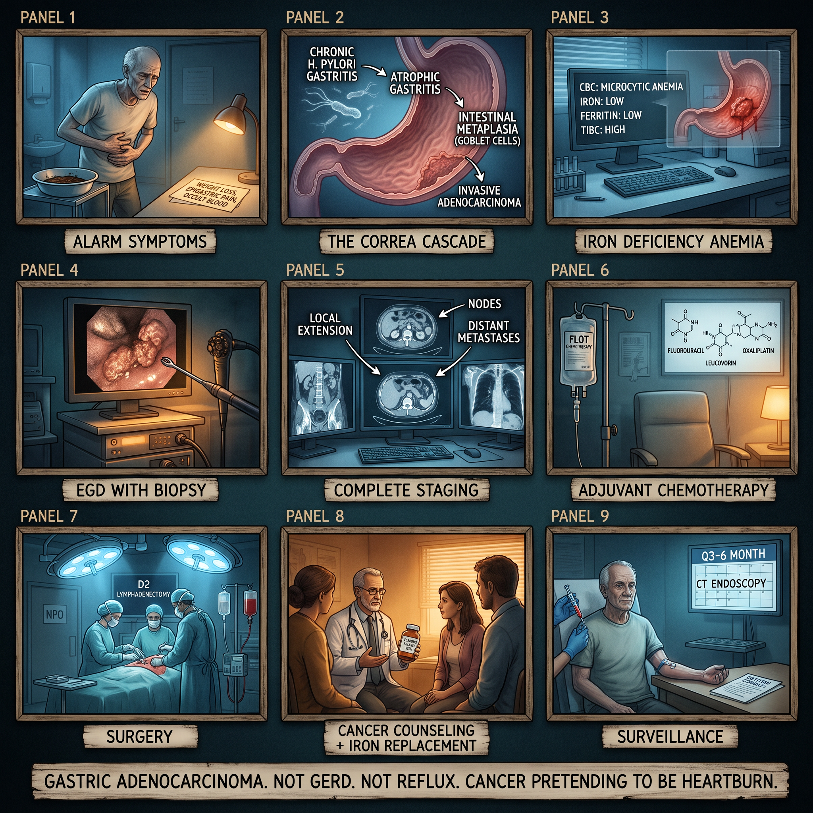
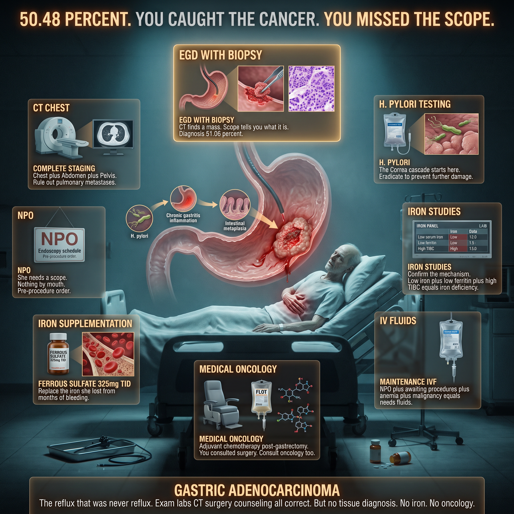
Routine Check-Up - Pediatrics · 11-year-old boy, routine checkup that is anything but routine · 2026-07-28 | **Score:** 50% (Avg 61.8%) | **Patient:** 11-year-old boy, routine checkup that is anything but routine
Obesity in this case is not a mystery hormone. It is physics with a social amplifier.
Picture an energy ledger. Calories in (salty crunchy snacks, no vegetables, sugar-sweetened comfort food) stay high. Calories out (video games, almost no vigorous play) stay low. Adipocytes enlarge. Visceral fat talks to the liver through free fatty acids and inflammatory cytokines. Hepatocytes load with triglyceride. ALT rises before the kid ever looks "sick." His CMP already whispered this: ALT 52, alk phos up. That is pediatric NAFLD announcing itself on a routine blood draw.
Now add the feedback loop that CCS is actually testing. Weight-based bullying spikes cortisol and shame. Shame drives comfort eating. Comfort eating grows the adipose depot. The bigger depot invites more bullying, more anxiety, more school avoidance. Depression is not a side quest. It is the emotional face of the same cycle.
Contrast the wrong fork: you could chase Prader-Willi or hypothyroidism first. TSH can look mildly off in obesity and usually normalizes with weight loss. Metformin without diabetes is off-label theater. The HPI already handed you the diagnosis. Screen the metabolic complications. Then break both halves of the loop: calories and cruelty.
Must screen for T2DM before treatment plan; random CMP glucose is not enough
AAP CV risk screen; FH hyperlipidemia makes this mandatory
Family needs a real food plan, not vague advice
Explicit energy deficit order CCS expects alongside nutrition
Prescribe ≥1 hr vigorous activity/day after clearing heart/lungs
You stayed in the office, sequenced cleanly, timed perfectly, and avoided invasive nonsense. You examined general appearance, lungs, and heart. You ordered CMP and got the elevated ALT signal. You called social services for the bullying, and the scoreboard credited the psychology / family therapy / behavior-modification path. You did not throw metformin at a kid without diabetes. Timing, appropriate orders, and location/sequence were all 100%.


Poor Feeding - Pediatrics · Infant under 6 months, fever, poor feeding, behavioral change · 2026-07-27 | **Score:** 49.8% (Avg 52.7%) | **Patient:** Infant under 6 months, fever, poor feeding, behavioral change
The meninges are not a sterile vacuum. They are an immunologic compartment with its own cellular and biochemical profile. When a pathogen crosses into the subarachnoid space, the CSF becomes a liquid biopsy of that infection.
Picture the choroid plexus secreting CSF at 20 mL/hour in an infant. This fluid bathes the brain and spinal cord, then drains through arachnoid granulations into the venous sinuses. When a virus invades the meninges, lymphocytes cross the blood-CSF barrier and multiply in the subarachnoid space. They do not consume glucose — viral metabolism is negligible. The protein rises modestly from capillary leak but never reaches the grams-per-deciliter of bacterial meningitis.
Now picture bacterial invasion. Neutrophils pour in. They gobble glucose at a ferocious rate — bacterial meningitis CSF glucose drops to less than 40% of serum glucose, sometimes below 10 mg/dL. The protein skyrockets past 100-500 mg/dL from massive blood-brain barrier disruption. Gram stain shows organisms. Culture grows in hours.
The CSF triad — glucose, protein, cell count — tells you which war is being fought in the meninges:
| Parameter | Viral | Bacterial |
|---|---|---|
| WBC | 10-500, lymphocytic | 100-10,000+, neutrophilic |
| Glucose | Normal (>40% serum) | Low (<40% serum) |
| Protein | 50-150 mg/dL | 100-500+ mg/dL |
| Gram stain | Negative | Organisms seen |
| Culture | Negative | Positive in 24-48h |
Your patient: WBC 20 (lymphocytic), protein 50, glucose normal. This is a textbook viral meningitis CSF. The virus — likely an enterovirus (coxsackie, echo) in summer — has invaded the meninges, provoked a lymphocytic response, but left the glucose and protein barely disturbed. The blood-brain barrier is intact. The infection is self-limited.
The clinical anchor: Normal CSF glucose is the fork in the road. If glucose is normal, the meninges are fighting a virus. You provide supportive care, not antibiotics. If glucose is low, the meninges are fighting bacteria. You start empiric antibiotics within 30 minutes or the infant dies.
Fever + meningitis suspicion demands hematologic data. Neutrophilic leukocytosis with bandemia = bacterial until proven otherwise. Lymphocytic predominance or normal WBC = supports viral. This is the first lab you order after the physical exam.
You ordered cell count and protein but missed glucose. Glucose is the single most discriminatory parameter in the CSF triad. Normal glucose = viral. Low glucose = bacterial. Without it, you cannot confidently distinguish the two — and that decision drives whether to start antibiotics.
Gram stain returns in minutes. Culture takes days. In an infant where bacterial meningitis kills in hours, the gram stain is your rapid decision tool: organisms seen = start antibiotics now; no organisms = watch and wait. You skipped the fastest result in the panel.
Bacteremia precedes meningitis. If the same organism grows from blood and CSF, you have confirmed the route of invasion. In infants, group B strep and E. coli are the top pathogens — both seed the meninges from the bloodstream. Blood cultures are standard of care in any febrile infant under 3 months.
Infants with fever need source identification. UTI is the most common serious bacterial infection in febrile infants under 3 months. A urinary pathogen can seed the meninges hematogenously. UA + urine culture complete the septic workup — blood, urine, CSF.
Poor feeding = risk for hyponatremia (SIADH is common in CNS infections, even viral). Renal function matters for any medication dosing. Electrolyte derangement in an infant can cause seizures independent of the meningitis. This is basic monitoring for any admission-level pediatric illness.
The infant has fever and pain. Antipyretics reduce metabolic demand, improve comfort, and allow better neuro exam (a comfortable baby is examinable). Weight-based acetaminophen 10-15 mg/kg/dose. Ibuprofen only if >6 months. You correctly avoided aspirin — but gave nothing. Treatment scored 50% because you offered zero symptomatic therapy.
You recognized the infant meningitis triad. That is not trivial. In a pre-verbal infant, meningitis presents as fever plus irritability — the same presentation as otitis media, UTI, and a dozen other infant illnesses. You found the bulging fontanelle (increased ICP pushing CSF against the open sutures), the nuchal rigidity (meningeal inflammation resisting passive neck flexion), and the photophobia (meningeal irritation of the optic nerve sheath). Together, these three findings are the infant equivalent of Kernig and Brudzinski. You ordered the LP. You collected CSF. You sent it for culture, cell count, and protein. You correctly avoided two traps: aspirin (Reye syndrome — fatty liver + encephalopathy triggered by aspirin in febrile children with viral illness) and empiric antibiotics (the CSF results arrived quickly, and the pattern was viral — you interpreted it correctly and withheld unnecessary antibiotics).
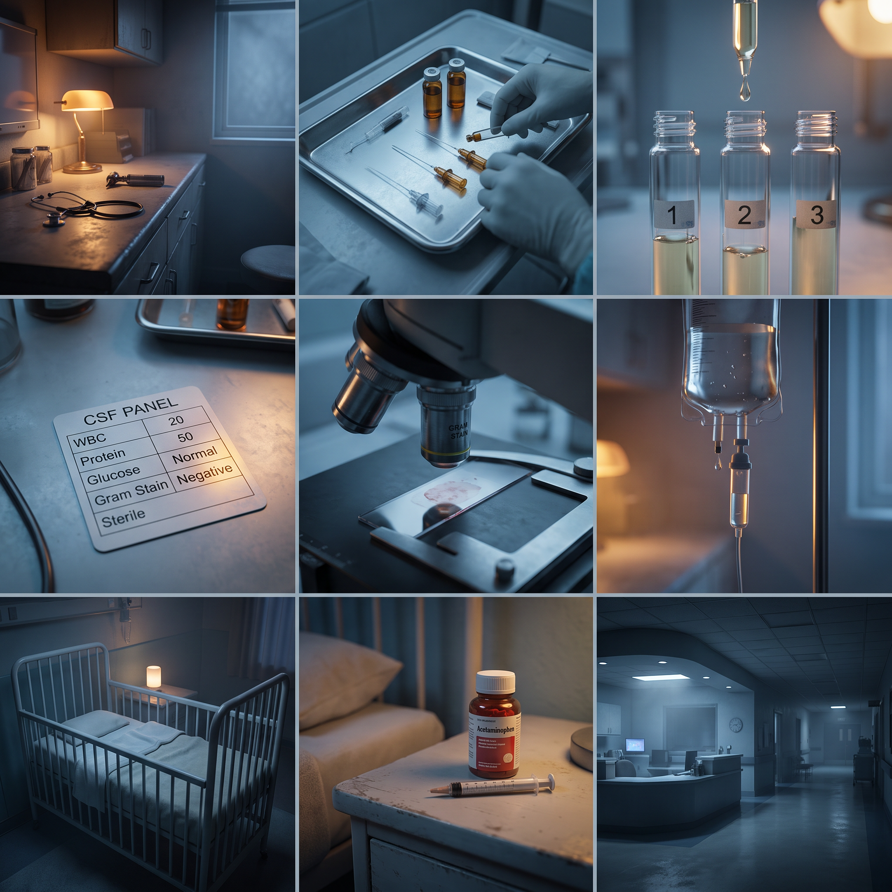
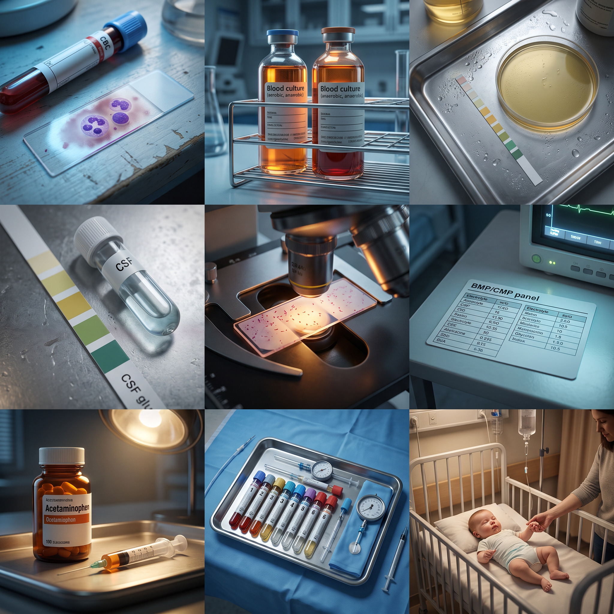
13M, obese, bedwetting x 6-9 months, behavioral issues · 2026-07-28 | **Score:** 47.52% (Avg 65.4%) | **Patient:** 13M, obese, bedwetting x 6-9 months, behavioral issues
This is a story in three systems: airway, heart, kidney.
1. The Airway Collapse
The pharynx is a collapsible tube. It has no rigid support — just muscle tone keeping it open. During REM sleep, pharyngeal muscle tone drops to its lowest point. In this patient, two forces conspire to close the airway:
- Adenotonsillar hypertrophy. The tonsils and adenoids are grade 3-4+ — they physically occupy the airway lumen. When the patient lies supine, gravity pulls them posteriorly into the pharynx.
- Obesity. The pharyngeal fat pad surrounds the airway externally. As the patient gains weight, the fat pad thickens and compresses the pharynx from the outside. The same BMI that widens his waistline narrows his airway.
When pharyngeal tone drops during REM, the airway collapses. The patient tries to breathe against a closed tube. Diaphragm contracts, chest wall expands, but no air moves. The intrathoracic pressure goes deeply negative — sometimes to -60 or -80 cm H2O, compared to normal -5 to -10.
2. The Cardiac Response — ANP Release
This is the connection most people miss. The negative intrathoracic pressure does something specific to the heart.
The right atrium receives venous return from the superior and inferior vena cavae. Normal inspiration creates a small negative pressure gradient that assists venous return — this is normal respiratory physiology. But during an obstructive apnea, the negative pressure is extreme. Venous return surges into the right atrium. The atrial wall stretches.
Atrial myocytes contain secretory granules filled with atrial natriuretic peptide (ANP). ANP is a 28-amino-acid peptide hormone. Its release trigger is mechanical: stretch the atrial wall, release ANP. No neural input needed. No hormone cascade. Pure mechanotransduction.
Every time this boy obstructs — and with severe OSA, that's 30+ times per hour — his right atrium stretches, ANP pulses into the bloodstream, and the kidneys receive a signal: dump sodium and water.
3. The Kidney Response — Nocturnal Polyuria
ANP acts on the kidney through four mechanisms:
| Site | Action | Effect |
|---|---|---|
| Afferent arteriole | Vasodilation | Increased GFR — more filtrate delivered |
| Efferent arteriole | Vasoconstriction | Further increases GFR — squeezes more plasma into Bowman's space |
| Mesangial cells | Relaxation | Increased filtration surface area |
| Collecting duct | Inhibits sodium reabsorption (ENaC antagonism) | Sodium stays in the tubule → water follows → polyuria |
The net effect: the kidney produces more urine at night than it does during the day. A normal child produces less urine at night (circadian ADH rhythm). An OSA child produces more.
4. The Brain — Can't Wake Up
Simultaneously, sleep fragmentation from recurrent apneas prevents the normal arousal response to a full bladder. A well-rested brain detects bladder distension → lightens sleep → wakes the child to void. A sleep-deprived, apnea-fragmented brain cannot generate the arousal. The bladder fills, the brain sleeps through it, and the bed is wet.
And that is how a blocked airway becomes a wet bed. The pathway: pharyngeal collapse → negative intrathoracic pressure → ANP release → nocturnal polyuria + sleep fragmentation → no arousal → enuresis.
The behavioral issues at school follow the same logic. This is not ADHD. This is chronic sleep deprivation masquerading as inattention. A 13-year-old who obstructs 30 times per hour, every hour, all night, for six months has never had a full night of sleep. His frontal lobe is running on fumes. Of course he cannot focus.
The first test in any secondary enuresis workup. Rule out UTI (dysuria, frequency) and glucosuria (undiagnosed diabetes → osmotic diuresis). A negative UA strengthens the OSA hypothesis by excluding the two most common alternative causes. Costs nothing. Takes 30 seconds. Diagnostic weight: substantial.
An obese adolescent with OSA is a metabolic syndrome screening candidate. Insulin resistance and type 2 diabetes are not rare in this population — they are expected. Diabetes also causes polyuria and enuresis. You must rule out the metabolic cause before attributing everything to the airway.
Same logic. Obesity + OSA = screen for dyslipidemia. Cardiovascular risk starts in childhood.
The gold standard confirmatory test. Quantifies AHI (apnea-hypopnea index). Documents severity for surgical planning. Links OSA objectively to the enuresis and behavioral symptoms. Without the sleep study, you have a strong clinical diagnosis but no objective proof. Diagnostic score: 13.79% — this was the single biggest scoring gap.
The tonsillectomy opens the airway acutely. But obesity is the chronic driver of OSA. Without weight loss, the pharyngeal fat pad regrows, the airway recollapses, and the OSA returns. Surgery is the bridge. Weight loss is the destination.
You recognized the pattern. Secondary enuresis in an obese adolescent = OSA. You examined the airway and found the anatomical cause — adenotonsillar hypertrophy. You referred for tonsillectomy. You correctly avoided desmopressin (treats the bladder, ignores the airway), ADHD stimulants (treats the symptom, ignores the sleep fragmentation), antidepressants, and CPAP (second-line in children). You got the diagnosis right. You got the primary treatment right. The gaps are in the workup and the long game.
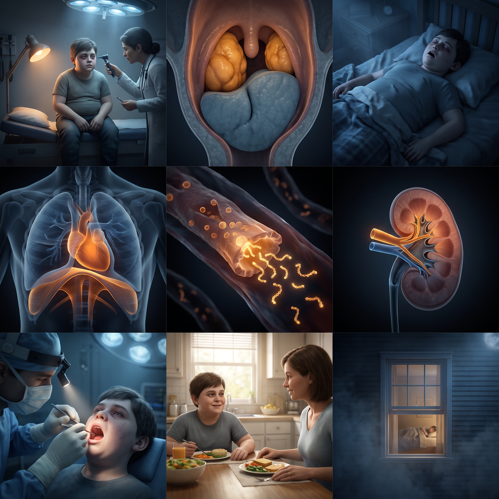
Chest Pain - Emergency Medicine · 65-year-old man · 2026-07-25 | **Score:** 45.01% (Avg 64.7%) | **Patient:** 65-year-old man
Atherosclerosis is not a plumbing problem. It's a biology problem. Cholesterol particles embed in the arterial wall. Macrophages consume them and become foam cells. The foam cells die, releasing their lipid contents and inflammatory mediators. A fibrous cap forms over this necrotic core. That's a stable plaque.
Unstable angina happens when the fibrous cap fissures or ruptures. The cap doesn't fully tear open — if it did, the thrombus would fully occlude the vessel, and you'd have a STEMI. Instead, the cap develops a small crack. Platelets adhere to the exposed subendothelial collagen. They aggregate. They release ADP and thromboxane A2. A small, non-occlusive thrombus forms.
This thrombus partially occludes the coronary artery. Blood flow is reduced — not stopped. The myocardium beyond the stenosis becomes ischemic, especially during demand (tachycardia, hypertension, exertion). That's the chest pain. But no myocytes have died yet — that's why the troponin is zero.
The danger is that this partial thrombus can grow. More platelets aggregate. The coagulation cascade activates — thrombin converts fibrinogen to fibrin. The thrombus extends. The artery goes from 70% to 90% to 100% occluded. Now you have a STEMI. Dead myocardium. Heart failure. Arrhythmia. Death.
The ACS bundle exists to interrupt this cascade at every possible point:
| Drug | Target | Mechanism |
|---|---|---|
| Aspirin | COX-1 → thromboxane A2 | Blocks one platelet activation pathway |
| P2Y12 inhibitor | ADP receptor (P2Y12) | Blocks the OTHER platelet activation pathway |
| Heparin/LMWH | Antithrombin III → factor Xa + thrombin | Blocks the coagulation cascade at multiple levels |
| Beta-blocker | Beta-1 adrenergic receptors | Reduces myocardial oxygen demand (HR x contractility) |
| Statin | HMG-CoA reductase + plaque biology | Stabilizes plaque, reduces inflammation, lowers LDL |
You gave him aspirin. That's one bolt on the door. You left the other four wide open.
Aspirin alone is half the antiplatelet strategy — ongoing thrombotic risk
Coagulation cascade unchecked — thrombus can grow
HR 90 unchecked — myocardial oxygen demand too high
No plaque stabilization, no LDL reduction
The treatment. The entire point. Never ordered.
Untreated hypertension + pre-diabetes — secondary prevention missed
No rhythm monitoring — ACS patient at risk for fatal arrhythmia
Hypomagnesemia → arrhythmia risk
Risk stratification and medication guidance missed
Pre-cath coagulation status never checked
Chest pain differential includes abdominal causes
Patient worsening in ED at 6 hours — needed higher level of care
The single most important preventive intervention
0% on all preventive care
- Troponin, echo, CXR, CBC, CMP — solid diagnostic panel
- Aspirin + nitroglycerin immediately
- Focused physical exam (general, chest/lungs, heart)
- Cardiology consult
- IV access


Adult female with chronic knee pain, radiographic joint space narrowing, osteophytes. History of peptic ulcer disease. Documented adverse reactions to NSAIDs. · July 27, 2026
Osteoarthritis: Loss of the shock absorber
Picture the knee joint. Two surfaces of articular cartilage — smooth, glassy, frictionless — separated by synovial fluid. The cartilage is a sponge made of collagen type II mesh filled with aggrecan (a proteoglycan). Aggrecan is a bottle-brush molecule: a protein core with thousands of chondroitin sulfate and keratan sulfate side chains bristling out. These side chains are highly negatively charged. They attract sodium. Sodium attracts water. Water pressurizes the cartilage. When you stand, the pressurized water resists compression like a hydraulic cushion.
Osteoarthritis is the failure of this system.
Step 1: Aggrecan loss. Age, mechanical stress, and low-grade inflammation activate matrix metalloproteinases (MMPs) and aggrecanases (ADAMTS-4, ADAMTS-5). They cleave aggrecan. The negative charge density drops. The osmotic swelling pressure collapses. The sponge can no longer hold water.
Step 2: Collagen network failure. Collagen type II fibers, normally under tension from the swollen aggrecan, go slack. They fray. Microfibrillation. The surface of the cartilage, once mirror-smooth, becomes rough and fissured.
Step 3: Subchondral bone reaction. Without the cartilage cushion, load transfers directly to the subchondral bone. The bone responds by thickening (subchondral sclerosis). Osteophytes form at the joint margins — the body's misguided attempt to stabilize the joint by widening the surface area. These are the "bone spurs" you see on X-ray.
Step 4: Synovitis. Cartilage breakdown products (fibronectin fragments, collagen fragments) are pro-inflammatory. They activate synovial macrophages. The synovium becomes inflamed. This adds a inflammatory component on top of the mechanical problem — which is why intra-articular steroids help (they quiet the synovitis, not fix the cartilage).
Why NSAIDs kill this patient
Peptic ulcer disease means the gastric mucosal barrier is already compromised. NSAIDs make it worse through two mechanisms:
- Direct topical irritation. NSAIDs are weak acids. In the acidic stomach, they're uncharged and cross the epithelial membrane. Inside the cell (pH 7.0), they ionize and are trapped. This "ion trapping" concentrates NSAIDs in gastric epithelial cells, causing direct cytotoxicity.
- COX-1 inhibition. Prostaglandins (PGE2, PGI2) produced by COX-1 maintain the gastric mucosal barrier: they stimulate mucus and bicarbonate secretion, maintain mucosal blood flow, and promote epithelial restitution. NSAIDs block COX-1. Mucus production drops. Bicarbonate secretion drops. Blood flow drops. The stomach lining, already damaged by PUD, loses its last defenses.
The result: a patient with PUD who takes ketorolac has a >10-fold increased risk of GI bleed. The CCS algorithm knows this. The case summary states it explicitly: "NSAIDs should be avoided in this patient as she has a history of peptic ulcer disease, and she states in the HPI that she has adverse reactions to NSAIDs."
The treatment you should have given
Duloxetine (SNRI). Serotonin and norepinephrine are neurotransmitters in the descending pain-modulating pathways from the brainstem to the dorsal horn of the spinal cord. These pathways use 5-HT and NE to inhibit pain transmission at the spinal level. Duloxetine blocks reuptake of both serotonin and norepinephrine, increasing their concentration in the synaptic cleft in these descending pathways. More 5-HT and NE in the dorsal horn = more inhibition of the ascending pain signal from the arthritic knee. This is central pain modulation — not anti-inflammatory, not COX-dependent, completely safe with PUD.
Intra-articular steroids. Triamcinolone or methylprednisolone injected directly into the knee joint space. They suppress synovial macrophage activation, reduce MMP and cytokine production, and quiet the inflammatory component of OA. Local injection means minimal systemic absorption — safe with PUD. NOT prednisone (requires hepatic conversion to prednisolone). NOT hydrocortisone (too short-acting). Triamcinolone and methylprednisolone give weeks to months of relief.
Physical therapy. Strengthens the quadriceps and hamstrings. A strong quadriceps absorbs some of the load that would otherwise go through the joint. Gait training, assistive devices. Evidence-based first-line treatment.
Weight loss. Every pound of body weight translates to 3-4 pounds of force through the knee during walking. Losing 10 pounds removes 30-40 pounds of force per step. This slows cartilage loss.
The first-line pharmacotherapy when NSAIDs are contraindicated. SNRI. Central pain modulation. Zero GI risk. The patient asked for pain relief and you gave her ketorolac instead — a drug that could kill her. The CCS gave you zero treatment points because you offered no safe pharmacotherapy.
Why duloxetine works in OA: The descending pain-modulating pathway (periaqueductal gray → rostral ventromedial medulla → dorsal horn) uses serotonin and norepinephrine to gate pain signals at the spinal level. Duloxetine increases both. It doesn't fix the knee. It turns down the volume on the pain signal reaching the brain.
Triamcinolone 40 mg or methylprednisolone 80 mg injected into the knee joint space. Local anti-inflammatory. Weeks to months of relief. Safe with PUD (minimal systemic absorption). Not prednisone (needs hepatic conversion). Not hydrocortisone (too short). This is guideline-supported, first-line for moderate-severe OA when NSAIDs contraindicated.
Diet, calorie-restricted. Every pound lost removes 3-4 pounds of knee load per step. This is not optional — it's preventive care the CCS algorithm explicitly scores. 0% because you didn't order it.
Quadriceps strengthening. Gait training. Range of motion exercises. Assistive device assessment. Conservative treatment that modifies disease progression. 0% because you jumped to knee replacement instead.
The patient told you she has PUD. She told you NSAIDs make her sick. You ordered ketorolac anyway. This is a direct contraindication. The CCS didn't just not give you credit — it flagged this as an inappropriate order. Ketorolac is a potent non-selective COX inhibitor with a GI bleed risk that's lethal in a PUD patient.
You jumped from diagnosis to surgery with zero conservative therapy. The OA treatment ladder is: weight loss + PT → duloxetine → intra-articular steroids → THEN consider surgery if refractory. You skipped every rung and went straight to the top. CCS flagged this as invasive.
Joint tap for what? The X-ray showed OA. There were no signs of infection (no fever, normal WBC, no erythema/warmth). Arthrocentesis is indicated for suspected septic arthritis or crystal arthropathy — not for radiographic OA. CCS flagged this as invasive.
A 60-something woman with chronic knee pain and OA on X-ray. Reactive arthritis (from chlamydia/gonorrhea) presents as acute mono/oligoarthritis in a younger sexually active population, not chronic degenerative joint disease in an older adult. These tests had zero diagnostic yield. They didn't hurt the score, but they added unnecessary orders.
Knee pain. Not chest pain. Not dyspnea. No pre-op risk stratification needed yet because you shouldn't be operating yet. Not the right test for this case.
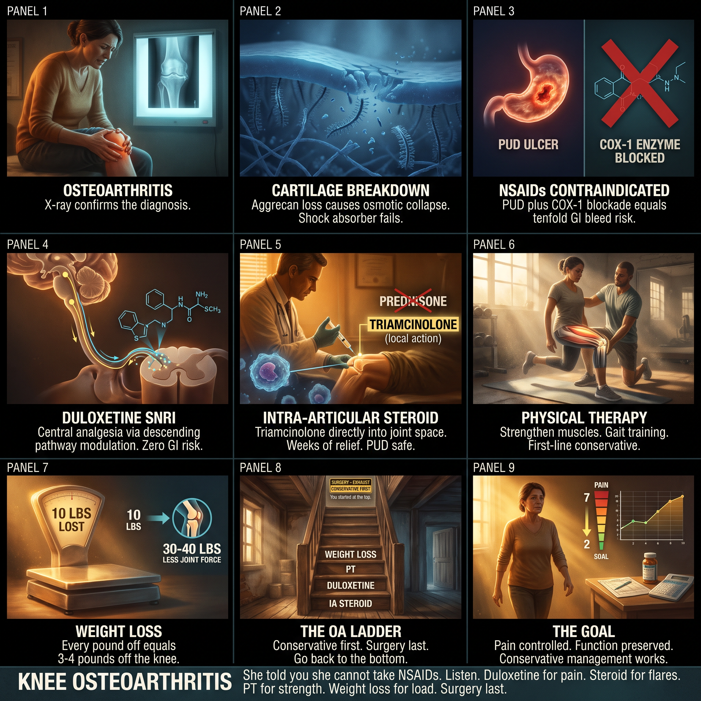
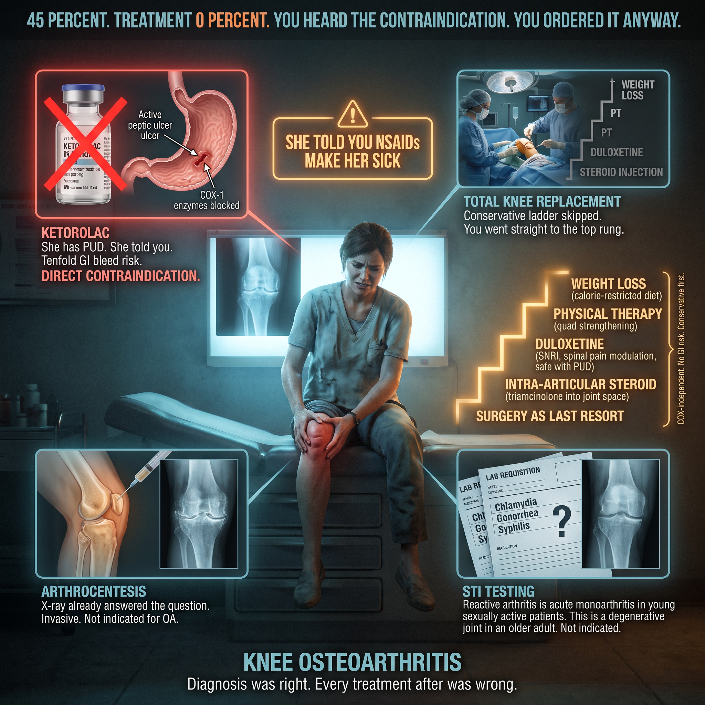
50-year-old male · 2026-07-23 | **Score:** 44.8% (Avg 68.2%) | **Patient:** 50-year-old male
A diverticulum is a mucosal and submucosal herniation through the muscularis propria. It forms at the point of least resistance — where the vasa recta penetrate the colonic wall. These are false diverticula: mucosa + submucosa only, no muscular layer.
The sigmoid colon generates the highest intraluminal pressure in the entire GI tract — up to 90 mmHg during peristalsis. That's because the sigmoid has the narrowest lumen and the thickest muscular wall. Laplace's law: pressure is inversely proportional to radius. Small tube, big pressure.
When a diverticulum forms, a pellet of stool — a fecalith — can lodge inside the pouch. The fecalith obstructs the neck. Mucus production continues but can't drain. Bacteria proliferate in the static environment. The thin wall — remember, no muscularis — perforates. First a microperforation. Then an abscess.
This patient had a 2 cm pericolic abscess. Microperforation with contained infection. If it had been 4 cm, he'd need percutaneous drainage. Above that, surgery.
Gold standard — X-ray cannot see abscess
Before antibiotics for organism ID
Bowel rest — stop the pressure pump
Sterile pyuria from sigmoid-bladder contact
Prevention strategy
Defer 4-6 weeks to rule out malignancy
- Admission to inpatient


· 2026-07-26
Fluoroquinolones (ciprofloxacin, levofloxacin, moxifloxacin) work by inhibiting DNA gyrase and topoisomerase IV — bacterial enzymes that manage DNA supercoiling during replication. The problem is that these enzymes exist in human cells too, especially in rapidly dividing tissues.
Fetal cartilage: Developing chondrocytes are actively dividing throughout gestation. Fluoroquinolones penetrate the placenta, concentrate in fetal cartilage, and:
- Inhibit mitochondrial DNA replication in chondrocytes → apoptosis of cartilage precursor cells
- Chelate magnesium ions — Mg2+ is a cofactor for integrin-mediated chondrocyte adhesion to extracellular matrix. Chelation disrupts normal cartilage architecture
- Generate reactive oxygen species → oxidative damage to developing joint surfaces
The result in animal studies: irreversible arthropathy, erosion of weight-bearing joints, and lameness. Human data is limited (unethical to randomize pregnant women to fluoroquinolones), but the animal evidence is so strong that fluoroquinolones are FDA Pregnancy Category C (animal harm demonstrated) and are avoided in pregnancy by universal consensus.
This is why it does not matter that the culture says "sensitive." The drug works on the bacteria but destroys the baby's joints. You must choose from the pregnancy-safe alternatives.


71M, constipation, nausea, fatigue · 2026-07-27 | **Score:** 41.67% (Avg 75.7%) | **Patient:** 71M, constipation, nausea, fatigue
The colon is not one organ. The left colon (descending, sigmoid) has a narrow lumen and formed stool. The right colon (ascending, cecum) has a wide lumen and liquid stool.
| Location | Symptoms | Why |
|---|---|---|
| Left-sided | Obstruction, constipation, decreased stool caliber, colicky pain | Narrow lumen + formed stool = mass blocks the pipe early |
| Right-sided | Iron deficiency anemia, fatigue, weight loss, occult bleeding | Wide lumen + liquid stool = mass grows silently, bleeds into stool without obstruction |
This patient had constipation and decreased stool caliber. Left-sided.
The hepatomegaly on exam? Portal drainage of the colon goes straight to the liver via the portal vein. Colon cancer metastasizes to the liver first -- it's not random, it's portal anatomy.
Biopsy confirmation. Sigmoidoscopy doesn't cover enough colon -- you need the full scope before surgery.
Tumor marker. Pre-op baseline determines prognosis. Post-op trend detects recurrence. CEA < 2-3 post-op = good prognosis.
Pre-op cardiac clearance. 71-year-old heading to bowel resection.
Bleeding risk + blood availability before surgery.
Bowel prep. Nothing by mouth before abdominal surgery.
Resection. Then chemo if nodes positive.
Tell the patient. Standard preventive care on CCS.
CT abdomen/pelvis with contrast -- correct. CT is the gold standard for colorectal cancer staging. CBC and CMP were appropriate baseline labs. Rectal exam caught the occult blood.


· 2026-07-26
T3 enters every nucleated cell in the body through MCT8 transporters and binds nuclear thyroid hormone receptors. These receptors are transcription factors sitting on thyroid response elements (TREs) in DNA. When T3 is absent, the TR recruits corepressors and silences gene transcription. The result is a whole-body metabolic deceleration:
| System | What happens without T3 |
|---|---|
| Metabolism | Decreased Na+/K+ ATPase → less ATP consumption → lower BMR → weight gain, cold intolerance |
| Heart | Decreased beta-1 receptor expression, decreased SERCA2a → bradycardia, low voltage, prolonged QT |
| Lipids | Decreased hepatic LDL receptor expression → elevated LDL → accelerated atherosclerosis |
| Brain | Decreased cerebral blood flow, decreased serotonin turnover → fatigue, cognitive slowing, depression |
| Skin/Hair | Decreased sebaceous gland activity → dry skin, brittle hair, hair loss |
| GI | Decreased smooth muscle contractility → constipation |
| DTRs | Delayed relaxation phase of deep tendon reflexes — classic hung-up reflex |
Levothyroxine (T4) is the only treatment. It is a synthetic T4 that peripheral tissues convert to T3 via deiodinases. Start at 1.6 mcg/kg/day. Recheck TSH in 6-8 weeks. Adjust dose by 12.5-25 mcg increments.

Fever - Internal Medicine · Female, IV drug user · Fever, chills, malaise · New systolic murmur · Janeway lesions · 2026-07-27 | **Score:** 39.11% (Avg 77.6%) | **Diagnosis:** Infective Endocarditis
The Infective Endocarditis Chain
- Endothelial injury opens the door. IV drug use introduces particulate matter (talc, cotton fibers, bacteria) directly into venous circulation. These particles strike the endothelial surface of the tricuspid valve (right-sided) or — if there's a pre-existing abnormality — the mitral or aortic valve (left-sided). The endothelium is damaged. Platelets and fibrin deposit at the injury site. This is the nonbacterial thrombotic endocarditis (NBTE) — a sterile platelet-fibrin clot on a valve.
- Bacteremia seeds the clot. With every injection, skin flora enter the bloodstream. Staphylococcus aureus is the most common organism in IVDU-associated endocarditis because it colonizes the skin and is highly virulent. The bacteria adhere to the platelet-fibrin clot via surface adhesins (MSCRAMMs — microbial surface components recognizing adhesive matrix molecules). They embed. They multiply. They form a vegetation: a biofilm of bacteria, platelets, fibrin, and inflammatory cells.
- The vegetation is a fortress. Antibiotics cannot penetrate biofilm easily. The bacteria inside are metabolically inactive (persister cells), protected from both antibiotics and immune cells. This is why endocarditis requires bactericidal antibiotics for 4-6 weeks — not bacteriostatic agents — and sometimes valve surgery when antibiotics cannot clear the vegetation.
- Emboli shower the body. Fragments of the vegetation break off and travel. Right-sided emboli → pulmonary septic emboli → lung abscesses. Left-sided emboli → brain (stroke, mycotic aneurysm), spleen (splenic abscess), kidneys (renal infarct), skin (Janeway lesions — septic microemboli in dermal vessels), retina (Roth spots).
- The murmur is the valve failing. As the vegetation erodes the valve, the leaflets don't close properly. Mitral regurgitation produces a holosystolic murmur at the apex radiating to the axilla. The valve may perforate entirely.
Antibiotics — The Right Drug for the Organism
| Organism | First-Line | Alternative |
|---|---|---|
| MSSA (methicillin-sensitive S. aureus) | Nafcillin/oxacillin 2g IV q4h OR cefazolin | Vancomycin |
| MRSA (methicillin-resistant S. aureus) | Vancomycin IV OR daptomycin | Linezolid (bacteriostatic — not ideal) |
| Streptococcus viridans | Penicillin G OR ceftriaxone | Vancomycin |
| Enterococcus | Ampicillin + gentamicin | Vancomycin + gentamicin |
| HACEK organisms | Ceftriaxone | Ampicillin-sulbactam |
For IVDU-associated endocarditis, empiric coverage MUST include MRSA until cultures return. You cannot assume MSSA. You need vancomycin or daptomycin from the start.
Why Aspirin Is Contraindicated
Aspirin does not prevent emboli in infective endocarditis. Multiple RCTs have shown no benefit. What aspirin does do: it increases the risk of hemorrhagic transformation of septic cerebral emboli. A vegetation fragment that causes a bland infarct becomes a hemorrhagic infarct on aspirin. This is a catastrophic outcome. Aspirin has no role in acute infective endocarditis.
Penicillin G + Clindamycin + Ceftriaxone | Vancomycin OR Daptomycin IV | IVDU endocarditis = assume MRSA until cultures prove otherwise. Penicillin does not cover MRSA. Ceftriaxone does not cover MRSA. Clindamycin is bacteriostatic and resistance is common. You needed vancomycin.
Ordered aspirin therapy | Do not give aspirin | Aspirin increases hemorrhagic conversion of septic emboli to the brain. No benefit proven in RCTs. Harm is proven.
The rule: IVDU + endocarditis = vancomycin, not penicillin. Always. Empiric. Do not wait for cultures.
Looking for leukocytosis (infection), anemia (chronic disease), thrombocytopenia (consumption from vegetations)
Baseline renal function before vancomycin dosing. Liver function for septic emboli. Electrolytes.
Febrile, tachycardic, tachypneic — check oxygen
Major Duke Criterion for IE. Guides targeted antibiotics when sensitivities return.
qSOFA ≥2 (RR >22, tachycardia) = sepsis workup must include urine source. The score report explicitly states urine culture should be part of the systematic search for infection source.
Female of childbearing age + unprotected sex. Vancomycin and ceftriaxone are pregnancy category B. Must rule out pregnancy before imaging and treatment decisions.
Unprotected sex with multiple partners + needle sharing. This is a dual high-risk profile: sexual AND parenteral. Screen for everything.
Endocarditis management requires infectious disease expertise. Antibiotic selection, duration, monitoring.
Sepsis. qSOFA ≥2. Fluids are part of the sepsis bundle.
The root cause of this illness is IV drug use. Treat the disease that caused the disease.
Housing instability, maladaptive patterns. Social determinants of health.
Opioid overdose education and naloxone distribution reduces mortality by 25-46% in IVDU populations.
Multiple partners, unprotected sex.
Every 10 years.
No recent pap.
- Echo + blood cultures — the two Major Duke Criteria. Both ordered correctly.
- ECG, troponin, CXR — cardiac and pulmonary workup before committing to the diagnosis
- Hepatitis panel (B and C) — correctly recognized the dual parenteral/sexual risk
- Toxicology screen — appropriate for substance abuse history
- Cardiothoracic surgery consult — for possible valve replacement
- Antipyretics — fever management
- No inappropriate invasive orders
- Correct sequencing


55M alcoholic cirrhosis, hematemesis · 2026-07-28 | **Score:** 38.61% (Avg 71.1%) | **Patient:** 55M alcoholic cirrhosis, hematemesis
Picture the portal vein as a pressurized hose into a scarred liver. Flow backs up. The body opens escape valves: esophageal and gastric submucosal veins. Those veins were never built for arterial-level stress. Walls thin. Pressure rises. One ruptures into the lumen. That is the hematemesis.
Cirrhosis also sabotages the cleanup crew. The liver stops making clotting factors (INR up). The spleen sequesters platelets (here 100k). Blood in the gut becomes a protein bomb for ammonia. Lactulose is not "constipation med" here. It is encephalopathy prophylaxis.
Blood ready for Hgb 8 active bleed
Resuscitate shock carefully
Restrictive transfusion for ongoing bleed
Banding = definitive therapy
Prep for urgent scope
Clot stability / acid cover
SBP prophylaxis, mortality cut
Prevention 0%
Exam including rectal melena. CBC/coags/CMP/LFTs. US showing cirrhosis/ascites/splenomegaly. Octreotide IV continuous. Diagnosis 100%. No inappropriate invasives.


· July 27, 2026
Giant cell arteritis is a T-cell-mediated granulomatous vasculitis targeting medium-to-large arteries — especially the cranial branches of the aorta.
CD4+ T cells infiltrate the adventitia of the temporal artery. They recruit macrophages. The macrophages fuse into multinucleated giant cells at the intima-media junction. These cells release IL-6, TNF-alpha, and matrix metalloproteinases. The internal elastic lamina fragments. The intima thickens dramatically in response (intimal hyperplasia). The lumen narrows. Segmental "skip lesions" mean only parts of the vessel are affected.
Why vision is threatened: The ophthalmic artery branches from the internal carotid. The posterior ciliary arteries supply the optic nerve head. When GCA inflames these arteries, the optic nerve loses blood supply — anterior ischemic optic neuropathy (AION). This is the most common cause of permanent visual loss in GCA. It can happen in hours.
Why jaw claudication: The facial artery supplies the masseter. Inflamed → can't deliver blood during chewing → muscle cramps → pain with mastication. Classic GCA symptom.
Why ESR and CRP are almost always elevated: IL-6 drives the liver to produce acute phase reactants. Fibrinogen elevates ESR. CRP is produced directly. ESR is often >100 in active GCA. A normal ESR makes GCA very unlikely. These are not specific tests — any inflammation raises them — but they are exquisitely sensitive.
Why prednisone, not dexamethasone: Prednisone has an intermediate duration of action (12-36 hours). Dexamethasone is a long-acting fluorinated steroid (36-54 hours) that accumulates. More adrenal suppression, more osteoporosis, more myopathy with prolonged use. For a disease requiring 12-18 months of treatment with slow tapering, prednisone's pharmacokinetics are vastly superior. When visual symptoms are present, guidelines recommend IV methylprednisolone days 1-3, then transition to oral prednisone 60-80 mg/day.
Associated aortitis: GCA is a systemic large-vessel vasculitis. The thoracic aorta can be involved. Patients have a 17-fold increased risk of thoracic aortic aneurysm. Screen with chest imaging at diagnosis.
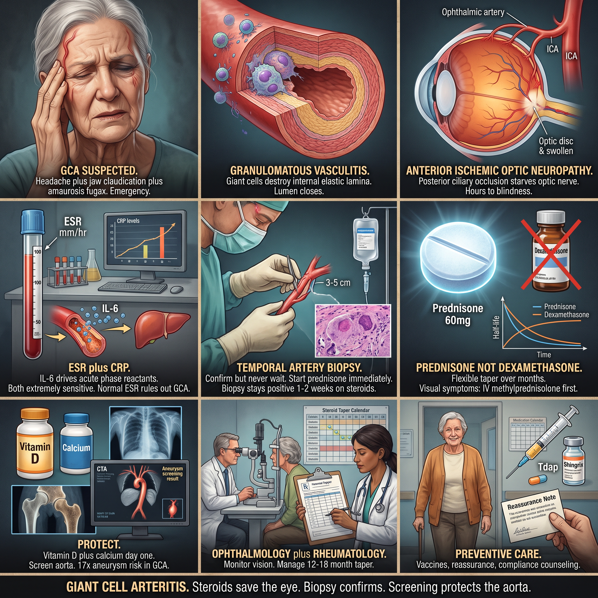
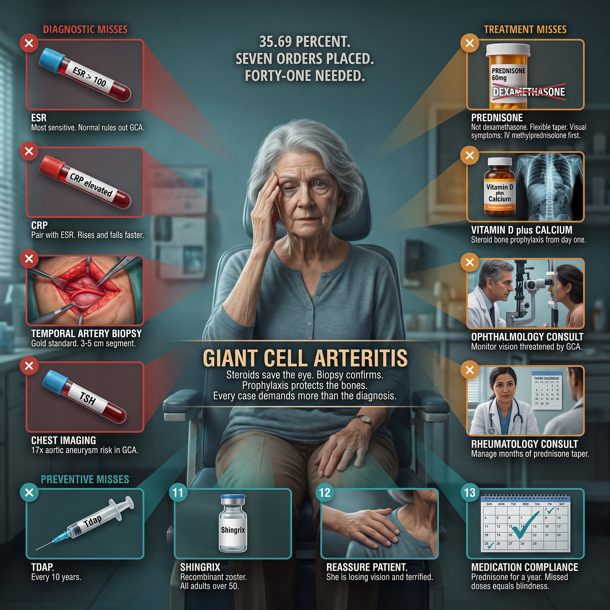
· 2026-07-26
What T3 Does to the Heart (Spatial, Mechanism-First)
Thyroid hormone is not just a metabolic thermostat. It is a direct cardiac transcription factor.
Entry: T3 enters cardiomyocytes via the MCT8 transporter -- a specific monocarboxylate transporter on the cell membrane. It does not diffuse passively; it is actively imported.
Nuclear action: Inside the nucleus, T3 binds the thyroid hormone receptor (TR) which heterodimerizes with the retinoid X receptor (RXR) on thyroid response elements (TREs) in DNA. This complex is always sitting on the DNA -- when T3 is absent, it recruits corepressors and silences gene transcription. When T3 binds, corepressors fall off, coactivators bind, and transcription fires.
What gets upregulated:
| Gene product | Effect on the heart |
|---|---|
| Beta-1 adrenergic receptor | More receptors = more sensitivity to every molecule of circulating catecholamine. Same norepi level, bigger heart rate and contractility response |
| SERCA2a (sarcoplasmic reticulum Ca2+-ATPase) | Faster calcium reuptake into SR = faster relaxation (lusitropy). Shortened diastole = less coronary filling time |
| Myosin heavy chain alpha (MHC-α) | Fast ATPase isoform = faster cross-bridge cycling = faster contraction velocity. The heart literally contracts faster at the molecular level |
| Sodium-potassium ATPase | Increased Na+/K+ pump activity = more ATP consumed at rest = increased basal metabolic rate = heat production, sweating, weight loss |
The atrial fibrillation connection: Shortened atrial refractory period (from accelerated repolarization kinetics) + increased automaticity + increased sympathetic tone = the perfect substrate for atrial fibrillation. Up to 15% of hyperthyroid patients develop A-fib. In a young female with no structural heart disease, unexplained A-fib is Graves' until proven otherwise.
Why Propranolol Is Not Enough
Propranolol is a non-selective beta-blocker. It sits on beta-1 and beta-2 receptors and blocks catecholamine binding. It slows the heart rate. It reduces tremor. It makes the patient feel less anxious. At very high doses, it also blocks the 5'-monodeiodinase enzyme that converts T4 to T3 -- but this effect is slow (10 days to meaningful reduction) and clinically negligible.
What propranolol does NOT do:
- Does not stop T4/T3 production in the thyroid gland
- Does not block TSH receptor antibodies (TSI)
- Does not prevent thyroid storm if the patient decompensates
- Does not reduce the long-term cardiac remodeling from sustained hyperthyroidism
You need an anti-thyroid drug. This is the heart of the case.
You diagnosed a disease that directly remodels cardiac electrophysiology. T3 upregulates beta-1 receptors (more sympathetic tone), shortens atrial refractory period (A-fib substrate), and increases automaticity (sinus tachycardia). An ECG is non-negotiable. It tells you:
- Rhythm: Sinus tachycardia vs A-fib (changes management)
- Rate: Is the propranolol dose adequate?
- Ischemia: Demand ischemia from sustained tachycardia in a heart that never rests
Anxiety + palpitations + tremor = the stimulant toxidrome. Cocaine blocks norepinephrine reuptake. Methamphetamine reverses the transporter and floods the synapse. Both produce the exact same clinical picture as hyperthyroidism. You must rule out exogenous catecholamine excess before committing to endogenous thyroid excess. This is pattern recognition, not fishing.
Both methimazole and PTU cause agranulocytosis (absolute neutrophil count < 500) in ~0.3% of patients. It is idiosyncratic, unpredictable, and can happen at any time in treatment. A baseline CBC with differential is standard of care before starting either drug. If the patient develops fever and sore throat on treatment, you recheck the CBC immediately.
PTU carries a black box warning for fulminant hepatic necrosis. Baseline transaminases are mandatory before starting. CMP also gives you renal function (drug clearance) and electrolytes.
Graves' management involves decisions about titration vs block-and-replace, monitoring intervals, timing of definitive therapy (radioactive iodine ablation vs thyroidectomy), and managing the 1-2% risk of thyroid storm during treatment initiation. Endocrine should be on board from the emergency department, not consulted weeks later in clinic.


Agitation - Internal Medicine · · 2026-07-27 | **Score:** 32.17% (Avg 37.7%) | **Diagnosis:** Acute Intermittent Porphyria (AIP)
Heme is made in a chain of eight enzymatic steps, split between the mitochondria and cytoplasm. AIP is a defect in the third enzyme: porphobilinogen deaminase (PBGD, also called hydroxymethylbilane synthase). This enzyme converts porphobilinogen (PBG) into hydroxymethylbilane.
When PBGD is defective:
- PBG and ALA (aminolevulinic acid) accumulate upstream of the blocked step
- These intermediates are neurotoxic — they damage peripheral nerves, autonomic nerves, and the CNS
- Heme production falls, which disinhibits ALA synthase (the rate-limiting first step) via loss of negative feedback — making everything worse
The result is an acute neurovisceral attack with five cardinal features:
| System | Symptom | Mechanism |
|---|---|---|
| Abdominal | Severe, diffuse abdominal pain (out of proportion to exam) | Autonomic neuropathy → visceral dysmotility and ischemia |
| Neuropsychiatric | Anxiety, agitation, hallucinations, confusion, depression | ALA/PBG toxicity to CNS neurons and GABA receptor antagonism |
| Peripheral nerve | Paresthesias, numbness, weakness, ascending paralysis (can mimic Guillain-Barre) | Axonal degeneration from toxic intermediates |
| Autonomic | Tachycardia, hypertension, diaphoresis, urinary retention | Sympathetic overdrive from autonomic ganglion damage |
| CNS | Seizures, SIADH (hyponatremia), posterior reversible encephalopathy (PRES) | Hypothalamic and cortical involvement |
The classic AIP patient: young woman (20-40), presents during luteal phase (progesterone triggers), acute abdominal pain + neuropsychiatric change + hyponatremia + seizure. But it can present in anyone with the mutation.
Triggers (the "5 As"):
- Alcohol — induces ALA synthase (the enzyme you DON'T want more of)
- Anesthesia — barbiturates, certain volatile agents
- Antibiotics — sulfonamides, rifampin
- Anticonvulsants — phenytoin, carbamazepine, phenobarbital
- Androgens/Progesterone — hormonal triggers; also fasting, infection, stress
The unifying principle: Anything that induces cytochrome P450 in the liver increases heme demand, which disinhibits ALA synthase, which floods the blocked pathway with toxic intermediates.
Elevated | Normal
Elevated | Normal
Elevated (coproporphyrin) | Elevated (uroporphyrin, heptacarboxyl)
None (no photosensitivity) | Vesicles, bullae, fragile skin on sun-exposed areas
Normal | Elevated (isocoproporphyrin)
Drugs, alcohol, fasting, hormones | Alcohol, estrogen, iron overload, hepatitis C
Missed: Diagnostic orders 31.03% This is the single most important missed order. It's the Watson-Crick of AIP diagnosis. Here's why it's brilliant:
- During an acute attack, the blocked PBGD enzyme causes PBG to spill into the urine
- A spot urine PBG during symptoms is the screening test
- It turns the urine dark red/purple on standing (oxidation of PBG to porphobilin, hence "porphyria" = purple)
How to distinguish AIP from PCT (Porphyria Cutanea Tarda):
The CCS score report tells you exactly this: "Note that stool porphyrins will not help in AIP." If you suspected AIP, the sequence is:
Missed: Treatment orders 29.41% AIP affects 1 in 75,000 people. Most physicians will see it once or twice in a career. Once the diagnosis is suspected or confirmed, management belongs to a specialist — hematology/oncology or internal medicine. The specific treatments:
- IV hemin (Panhematin) — the definitive acute treatment. It provides exogenous heme, which restores negative feedback on ALA synthase, shutting down production of toxic intermediates. Dose: 3-4 mg/kg IV daily for 4 days.
- Glucose loading (D10W or dextrose) — a temporizing measure while waiting for hemin. High glucose suppresses ALA synthase via the PGC-1alpha pathway. Use 300-500 g dextrose/day (e.g., D10W at 125 mL/hr).
- Analgesia — opioids (morphine, hydromorphone) for severe abdominal pain. Avoid meperidine (seizure risk).
- Antiemetic — ondansetron, prochlorperazine
- Seizure management — benzodiazepines or levetiracetam (avoid phenytoin, carbamazepine, valproate, phenobarbital — all P450 inducers)
Missed: Preventive care 0% Alcohol does two things that worsen AIP:
Every acute porphyria patient needs aggressive trigger avoidance education. Alcohol is the most common preventable trigger.
The sodium was 131. In AIP, hyponatremia happens because of SIADH (syndrome of inappropriate ADH) from hypothalamic involvement. Treatment is fluid management — normal saline or hypertonic saline if severe. You missed the IV fluids order.
Timing: 0% — "1 negative patient update prior to correct treatment." The case penalized you for delay. In AIP, time is nerve. Every hour of an acute attack without treatment risks permanent neuropathy.
- Abdominal exam — evaluating the chief complaint of abdominal pain
- Neuro/psych exam — the most important exam given psychiatric symptoms, seizures, paresthesias
- CBC — looking for anemia (can cause somnolence)
- BMP/CMP — chemistries are foundational screening
- Ethanol level — patient admitted to drinking, appropriate to check
- Psychiatry consult — appropriate for the psychiatric symptoms
This tells me you recognized the abdominal pain and the psychiatric/neuro symptoms. You ordered the right screening labs. You just didn't connect the pattern to AIP and order the diagnostic urine test.


Abdominal Pain - OB/GYN · 33-year-old woman · 2026-07-23 | **Score:** 31.99% (Avg 81.3%) | **Patient:** 33-year-old woman
A fertilized ovum is supposed to implant in the endometrium — a thick, vascular, distensible tissue designed to accommodate a growing embryo for nine months.
In an ectopic pregnancy, the ovum implants in the fallopian tube. The tube is not the uterus. It's a narrow muscular conduit. Its wall is thin. It cannot distend. As the trophoblast invades the tubal mucosa and then the muscularis, it erodes into the tubal blood vessels. The tube stretches. Then it tears.
When the tube ruptures, maternal blood spills directly into the peritoneal cavity. There is no tamponade — the peritoneal space is open. The bleeding continues until the pressure drops enough to slow the flow, or until a surgeon ties off the bleeding vessel.
The blood itself is an irritant. The peritoneum registers it as a chemical burn. That's where rigidity, guarding, and rebound come from — not infection, not inflammation. Just free blood, chemically irritating the most sensitive membrane in the body.
Treatment never happened — case timed out
Gold standard for ectopic — transabdominal may miss
No blood available, no Rh type
Severe untreated pain
Nausea untreated
Any surgical patient needs one
She thinks she's infertile — she isn't
Risk factor for ectopic
Binge drinking → impaired judgment → unprotected sex
STIs → tubal damage → ectopic risk
- Correctly avoided CT and X-ray (positive pregnancy test, no radiation)
- CBC, CMP, PT/PTT, IV fluids
- The diagnosis was right: ruptured ectopic pregnancy


Fatigue - Internal Medicine · 60M, diabetic ESRD, K 6.0, Cr 9.24 · 2026-07-29 | **Score:** 31.26% (Avg 63.2%) | **Patient:** 60M, diabetic ESRD, K 6.0, Cr 9.24
Healthy kidneys excrete potassium and fixed acid every day. Scarred end-stage kidneys do not. Potassium climbs. Hydrogen ions accumulate. Anion-gap metabolic acidosis. Urea and middle molecules poison the brain: memory loss, rambling, disorientation. That is uremic encephalopathy, not "just being tired."
Calcium gluconate does not lower serum K. It restores the cardiac myocyte's voltage distance from the arrhythmia cliff. Minutes of protection.
Insulin (+ glucose) and beta-agonists drive K into cells via Na/K-ATPase. Total body potassium is unchanged. When the shift ends, K rebounds.
Hemodialysis is a second kidney. Blood across a dialyzer. Potassium, uremic toxins, and acid leave the patient. That is why CCS says temporizing meds are not needed once HD is started: the machine is the treatment.
Definitive acute treatment — ends the case
Dialysis management + follow-up
Long-term destination
Document uremic CNS
DM etiology
K 6 safety
Chronic parenchymal disease
ICU/inpatient, not ED
Negative update before correct Rx
Exam (general, lungs, heart, extremities). CBC + CMP unlocked the diagnosis. ECG. Calcium gluconate. Instinct that dialysis was missing.


Fatigue - Preoperative / Bariatric Clearance · 48M, BMI 43, fatigue before bariatric clearance · 2026-08-01 | **Score:** 29.69% (Avg 61.8%) | **Patient:** 48M, BMI 43, fatigue before bariatric clearance
Picture the upper airway as a floppy hose held open by muscle tone while awake.
At sleep onset, pharyngeal dilators quiet. In BMI 43, fat pads in the lateral pharyngeal walls and tongue base already narrow the lumen. When tone drops, the walls approximate. Airflow stops. Oxygen falls. CO2 rises. The brain briefly arouses, tone returns, the airway pops open with a snort, and sleep fragments. Repeat hundreds of times. Morning arrives after nine hours in bed with almost no consolidated restorative sleep. That is daytime hypersomnolence with a "normal" sleep duration.
Spatial logic. Pathology is nocturnal and oropharyngeal. Daytime lung and heart exams can be clean. A normal CBC hematocrit does not rule it out. Facial bone films and an ENT shrug do not open a collapsed airway. Mild pulmonary hypertension on echo is a whisper of chronic intermittent hypoxia, not the diagnosis.
Contrast — central vs obstructive. Central apnea is the brainstem forgetting to breathe. Obstructive apnea is the pipe collapsing while the drive to breathe is still there. Obesity points hard at obstruction. Polysomnography separates them.
Connecting thread — bariatric clearance. Anesthesia relaxes the same dilators. Untreated OSA means a difficult airway, postop desaturation, and cardiopulmonary risk. The case ends when you order CPAP after a positive sleep study. Insulin and a calorie-restricted diet matter for surgical readiness, but they are not the OSA treatment.
Only test that diagnoses OSA. Without it, daytime sleepiness stays a guess and surgery stays unsafe.
The treatment that ends the case. Splints the collapsible airway; required once OSA is shown.
Hyperlipidemia + obesity screen before surgery — graded comorbidity lab.
Bariatric OR in two weeks — blood bank with the other preop labs.
You treated this as an obesity comorbidity screen and a preop workup: general/chest/heart exam, CBC, A1c, CMP, EKG, coag studies, insulin, calorie-restricted diet. Order count matched high scorers (~29). Appropriate orders stayed clean. The miss was the specific OSA path: polysomnography → CPAP, plus lipids and type/screen, before the timer died.
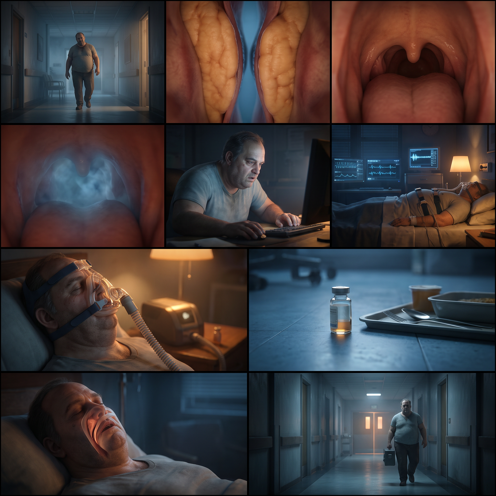
Abdominal Pain - Internal Medicine · · 2026-07-23
- The splenic flexure is the watershed. Between SMA (superior mesenteric artery) and IMA (inferior mesenteric artery) territories. When blood pressure drops, this is the first region to infarct. That's why the pain is LEFT-sided.
- Risk factors stack. Age 65, hyperlipidemia (atherosclerosis narrows the mesenteric vessels already), plus volume depletion from the stomach bug = splanchnic vasoconstriction. Cardiac output drops → gut perfusion drops further → mucosa necroses.
- Pneumatosis = necrotic bowel. Bacteria translocate through dead mucosa into the bowel wall, producing gas. This is visible on CT and plain film. Once pneumatosis appears, the bowel wall is dead. Resection required.
- Normal colonoscopy does NOT rule out ischemia. The scope looks at the mucosa. Ischemia starts in the submucosa and the blood vessels. By the time the mucosa looks abnormal, the bowel may already be dead. CT is the test.
- Broad-spectrum antibiotics for necrotic bowel. Dead tissue → bacterial translocation → sepsis. Cover anaerobes (metronidazole) + gram-negatives (pip-tazo, carbapenem, cipro, etc.).
- Surgery consult ends the case. Ischemic colitis with pneumatosis is a surgical emergency. Once you call the surgeon, you've done your job. The surgeon decides: observe vs. resect.
Definitive test. Shows pneumatosis, bowel wall thickening, mesenteric vessel patency.
Quick bedside film can show pneumatosis and portal venous gas.
Elevated lactate = tissue hypoperfusion = anaerobic metabolism. Bicarb 20 already signals this.
Pre-op clearance. Patient is heading to the OR.
Pre-op labs. Coagulation status before laparotomy.
Pre-op labs. Maroon stools + hypotension = possible transfusion.
Surgical abdomen. Nothing by mouth before OR.
Once CT confirms pneumatosis, call surgery immediately. The case ends here.
Necrotic bowel → bacterial translocation → sepsis. Anaerobe + gram-negative coverage.
Bloody diarrhea in hospital. Rule out C. diff even without recent antibiotics.


Headache - Neurology · 45F office, thunderclap headache + neck pain + vomiting + photophobia; BP 150/95; resists neck flexion · 2026-07-28 | **Score:** 16.92% (Avg 66.4%) | **Patient:** 45F office, thunderclap headache + neck pain + vomiting + photophobia; BP 150/95; resists neck flexion
Picture a thin-walled berry aneurysm at a circle-of-Willis fork. Pressure peaks. The wall tears. Arterial blood jets into the subarachnoid space around the brain stem and basal cisterns in seconds. That is the thunderclap: pain maxes in about a minute, not hours like migraine.
Blood in the meninges chemically irritates them. Neck flexion stretches those membranes. She resists full flexion. Photophobia, nausea, vomiting follow the same irritation. Squinting and shielding the eyes is photophobia on exam, not a red herring.
On non-contrast CT, acute blood is hyperdense (bright) in the cisterns and sulci within hours. Contrast is bright too. A contrast-enhanced head CT is the wrong first camera for bleed hunting. After you see SAH (or if CT is truly negative and LP proves xanthochromia), you need vascular imaging (CTA / MRA / catheter angio) to find which aneurysm bled and whether multiples exist. That is a different order from "CT head with contrast."
LP in this case: opening pressure 250, xanthochromic fluid. Xanthochromia is hemoglobin breakdown products. Protein climbs because blood proteins are sitting in the CSF. Cultures and HIV do not explain yellow fluid after a first-worst-neurologically-cursed headache. Optional on CCS once CT would have shown the bleed. You ordered LP because the wrong CT said normal. Fair move in real life if CT is truly negative; here the root error was the contrast CT.
Would have shown SAH; avoids the "normal CT" trap
Locates aneurysm for repair
SAH can crash fast
Correct location for aneurysmal SAH
Pain 8/10; undertreated pain raises ICP more than careful opioid
Vomiting / aspiration / ICP from retching
Prevents delayed cerebral ischemia from vasospasm; all aneurysmal SAH
Only definitive treatment; case ends when ordered
Pre-op packet
General appearance (pain, photophobia), neuro exam, HEENT/neck (flexion resistance). CBC, CMP, ECG. Appropriate sequencing otherwise. No wildly harmful invasive wrong turns beyond the wrong CT flavor and infectious over-workup. You were thinking SAH at the start. Trust that first instinct next time and order the without.


Rash - Pediatrics · 3-week-old female, 3.4 kg, irritability, eczema, musty-smelling diaper · 2026-07-28 | **Score:** 15.87% (Avg 38.5%) | **Patient:** 3-week-old female, 3.4 kg, irritability, eczema, musty-smelling diaper
Picture phenylalanine hydroxylase (PAH) sitting in the liver. It takes phenylalanine — an essential amino acid from dietary protein — and adds a hydroxyl group to the benzene ring, converting it to tyrosine. This reaction needs tetrahydrobiopterin (BH4) as a cofactor and molecular oxygen. It is the only way out for phenylalanine. There is no backup pathway.
In classic PKU, the PAH gene on chromosome 12 has a mutation — usually a missense mutation that reduces enzyme activity to less than 1% of normal. Phenylalanine arrives from the diet and cannot leave. It accumulates. Serum levels climb from normal (<2 mg/dL) to 20+ mg/dL.
Three things happen with that accumulation:
1. Brain toxicity. Phenylalanine competes with other large neutral amino acids (tyrosine, tryptophan) for the LAT1 transporter at the blood-brain barrier. High phenylalanine outcompetes them. The brain becomes starved of tyrosine (needed for dopamine, norepinephrine, epinephrine synthesis) and tryptophan (needed for serotonin). Myelination fails. White matter lesions form. IQ drops — irreversible if untreated in the first weeks of life. Every day of delay costs measurable IQ points.
2. Melanin deficiency. Tyrosine is the precursor for melanin. When PAH is blocked, tyrosine production falls. Melanocytes in skin, hair, and iris cannot make pigment. Untreated PKU children develop fair skin, blonde hair, and blue eyes — regardless of genetic background. This patient is only 3 weeks old, so not enough time has passed for this manifestation. But it is coming.
3. Musty odor. Phenylalanine accumulates to the point where alternative metabolic pathways kick in. Phenylalanine transaminase converts it to phenylpyruvic acid, which decarboxylates to phenylacetic acid. Phenylacetic acid is volatile. It is excreted in sweat and urine. It smells musty, mousy — the pathognomonic odor of PKU. The mother notices it in the diaper. That one observation is worth more than the entire meningitis workup you ordered.
The clinical anchor: A newborn with irritability, eczema, and musty-smelling urine = PKU until proven otherwise. One blood test. One dietary change.
PAH deficiency blocks phenylalanine → tyrosine. Serum phenylalanine >20 mg/dL confirms PKU. This one lab scores 45% of your grade. You ordered 14 orders — not one of them was the right one. Diagnosis: 13.04%.
PKU treatment is dietary phenylalanine restriction for life. Special low-phenylalanine formula + measured breast milk. Without it: irreversible intellectual disability. Treatment: 0%.
You examined the skin (eczema is a PKU manifestation — phenylalanine crystals in sweat irritate the skin). You investigated the strange-smelling diaper. You recognized the infant was sick and needed workup. You sequenced correctly and stayed in the right location. The problem was not effort or thoroughness. It was pattern recognition. You saw "sick newborn" and went straight to sepsis/meningitis — which is the right reflex in a febrile neonate. But this infant was afebrile (36.1 C). She had eczema. She had a strange smell. The pattern was metabolic, not infectious.
Picture a 3-week-old with meningitis. She is febrile, lethargic, feeding poorly, fontanelle bulging. This infant was 36.1 C, irritable with eczema, and a musty diaper. No fever. No meningismus. The smell and the skin are metabolic fingerprints, not CSF fingerprints. LP was a fishing expedition in the wrong ocean. Invasive workups feel thorough. Thoroughness in the wrong direction still scores near zero on diagnosis.
Galactokinase deficiency lives in the galactose pathway (cataracts, galactosuria). It does not dump phenylalanine into sweat, does not make musty odor, and does not cause this eczema pattern. You reached for "metabolic newborn" but grabbed the wrong enzyme. Smell + eczema points to PAH/PKU, not the galactose trap.
These are never "wrong" in a sick child. They also never diagnose PKU. UA ketones use nitroprusside for acetoacetate / beta-hydroxybutyrate. Phenylacetic acid does not light that up, so UA can look "ketones negative" while the infant is drowning in phenylalanine. The name phenylketonuria is a historical trap. Diagnosis is serum phenylalanine, not urine.
Timing scored 0%. You advanced the clock / took a hit before the correct treatment existed. In PKU every delay is myelination damage. Even if the invasive orders were "allowed," the clock without diet is the real injury.
Bottom line: 14 orders, 0 of them were serum phenylalanine or low-protein diet / nutrition consult. The miss list is short. The wrong-direction list is long.

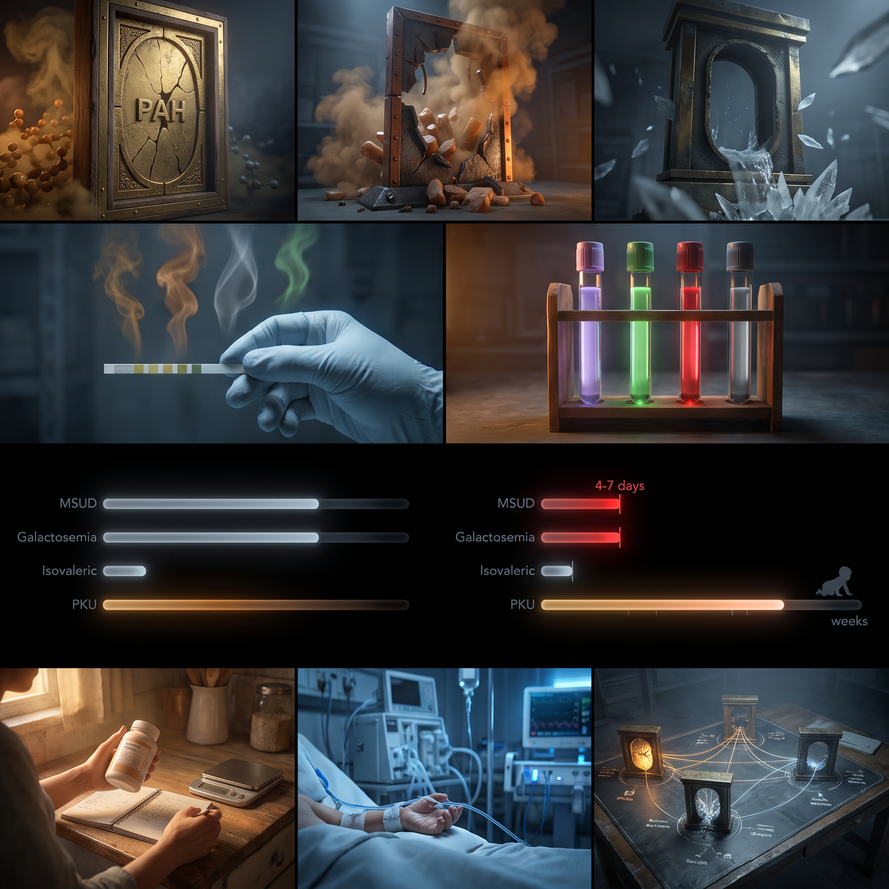
Foot Pain - Internal Medicine · Postmenopausal woman · Foot pain after tripping · Fracture from minimal trauma · 2026-07-27 | **Score:** 15.3% (Avg 62.3%) | **Diagnosis:** Osteoporosis
The Osteoporosis Cascade
- Estrogen withdrawal at menopause. Estrogen suppresses osteoclast activity through RANKL/OPG signaling. When estrogen drops, RANKL rises. Osteoclasts go unchecked. Bone resorption outpaces bone formation. This is why postmenopausal women lose 2-3% of bone mass per year for the first 5-7 years after menopause.
- Trabecular bone goes first. Osteoporosis hits trabecular (spongy) bone before cortical bone. Trabecular bone has higher surface area and turnover rate. The vertebrae, femoral neck, and distal radius are trabecular-rich and fracture first. The metatarsals also have significant trabecular content — a foot fracture from tripping is a sentinel event.
- Vitamin D deficiency accelerates the loss. Vitamin D is needed for intestinal calcium absorption. Without it, only 10-15% of dietary calcium is absorbed. The parathyroid glands sense the low serum calcium and secrete PTH. PTH pulls calcium from bone. Chronic secondary hyperparathyroidism from vitamin D deficiency is a silent bone thief that operates alongside postmenopausal osteoporosis.
- The fragility fracture is a predictor, not an endpoint. A woman who fractures her metatarsal from tripping has the same bone pathology as the woman who will fracture her hip next year. The foot fracture is the warning. DEXA confirms the T-score. Treatment prevents the hip fracture.
The Diagnostic Algorithm
| Step | Order | Why |
|---|---|---|
| 1 | Foot X-ray (not ankle) | Ankle X-ray does not reliably visualize metatarsals. You ordered ankle. This was the wrong study. |
| 2 | Bone densitometry (DEXA) | Quantifies bone mineral density. T-score ≤ -2.5 = osteoporosis. This is the screening test. |
| 3 | Vitamin D 25-OH | Low vitamin D worsens osteoporosis and must be repleted before or with bisphosphonates. |
| 4 | CBC + CMP | CBC: rule out multiple myeloma (anemia, rouleaux). CMP: calcium, alkaline phosphatase, renal function. You did these — correct. |
The Treatment Ladder
| Step | Order | Why |
|---|---|---|
| 1 | Vitamin D supplementation | Replete deficiency. 800-2000 IU/day. |
| 2 | Oral bisphosphonate (alendronate 70 mg weekly, first-line) | Binds hydroxyapatite in bone. Taken up by osteoclasts during resorption. Induces osteoclast apoptosis. Net effect: reduced bone resorption. Reduces vertebral fracture risk by 40-50%, hip fracture by 30-40%. |
| 3 | Exercise counseling | Weight-bearing exercise stimulates osteoblast activity through mechanical loading (Wolff's law). |
- CBC with differential — ruled out multiple myeloma and other marrow disorders
- CMP — checked calcium, renal function, alkaline phosphatase
- Correctly avoided — raloxifene (no breast cancer indication), estrogen-progestin (contraindicated — increased breast cancer, stroke, clotting risk)
- No inappropriate invasive orders
- Correct sequencing


Chronic Diarrhea - Internal Medicine · 45M music teacher, 3 years of diarrhea · 2026-07-27 | **Score:** 14.77% (Avg 41.3%) | **Patient:** 45M music teacher, 3 years of diarrhea
The physics of acid diarrhea
Picture the gastric parietal cell. On its apical membrane sits the H+/K+-ATPase -- the proton pump. This pump exchanges intracellular H+ for luminal K+, pumping HCl into the stomach lumen at a concentration gradient of 1,000,000:1. One million times more acidic than blood.
Normally, gastrin -- released from G cells in the gastric antrum -- nudges that pump. A little gastrin → a little acid. Food comes in, gastrin goes up, acid goes up, food is digested, gastrin goes down, acid goes down. Beautiful feedback control.
A gastrinoma breaks that feedback loop. The tumor cells secrete gastrin autonomously -- no food trigger needed, no negative feedback from low gastric pH. The result is a parietal cell bombardment: gastrin binds CCK-B receptors on every parietal cell, activates adenylate cyclase → cAMP → PKA → phosphorylation of the proton pump → massive, unregulated HCl secretion.
Why this causes diarrhea -- two mechanisms, one source
Mechanism 1: Secretory diarrhea. Normal small intestine absorbs water by absorbing sodium. Sodium absorption requires a neutral pH environment. When the gastric effluent is pure acid, the duodenal and jejunal mucosa cannot absorb sodium. Water follows sodium -- but sodium isn't going anywhere, so water stays in the lumen. High-volume watery diarrhea.
Mechanism 2: Malabsorptive diarrhea. Pancreatic lipase has a pH optimum of ~7-8. When the duodenal pH drops to 2-3 from the acid flood, lipase is irreversibly inactivated. No lipase = no fat digestion. Meanwhile, bile salts -- which need to be deprotonated to form micelles -- precipitate at low pH. No micelles = no fat absorption. The result: undigested fat passes through, producing the foul-smelling, oily, greasy stools characteristic of steatorrhea.
Two mechanisms, one root cause. The acid is the beginning, the middle, and the end of this story.
The heartburn tells you the diagnosis
This patient said his heartburn "improved when he was given pantoprazole." That's the smoking gun. A PPI directly and irreversibly blocks the H+/K+-ATPase. It doesn't matter how much gastrin is screaming -- if the proton pump is inhibited, acid doesn't form. The fact that PPI worked proves the symptoms are acid-mediated.
The differential for acid hypersecretion includes:
- Zollinger-Ellison (gastrinoma) -- autonomous gastrin, very high acid output
- Antral G-cell hyperplasia -- too many gastrin-producing cells
- Retained gastric antrum -- post-Billroth II surgery complication
- H. pylori -- stimulates gastrin (but more commonly causes ulcers)
The history of chronic diarrhea + steatorrhea + PPI-responsive heartburn + negative sigmoidoscopy = the problem is in the foregut, not the hindgut.
What You Got Right
Your physical exam was solid: general appearance, cardiac, abdomen, rectal. Stool occult blood negative (not a bleeding ulcer -- consistent with ZES acid damage that hasn't penetrated to vessels yet). CBC and CMP were appropriate screening. ESR and CRP negative (no inflammatory process). Magnesium and phosphorus normal.
The upper GI / small bowel X-ray was an optional order -- not required but it would have been abnormal if done.
What You Missed
| Missed | Impact |
|---|---|
| Serum gastrin | The diagnostic test. Gastrin >1,000 pg/mL (10x upper normal limit) is diagnostic of ZES. This patient: 1,200. Ordering this one lab would have changed everything. |
| Upper GI endoscopy | Locates the gastrinoma. Nodule in duodenal wall → biopsy shows benign gastric metaplasia. This is definitive structural diagnosis. |
| CT abdomen/pelvis | Staging. Gastrinomas can be malignant and metastasize to liver (40% of duodenal gastrinomas). Must check before planning surgery. |
| PPI (omeprazole/pantoprazole) | The treatment for acid hypersecretion. PPI blocks the H+/K+-ATPase directly -- the final common pathway -- regardless of how much gastrin is upstream. Without acid control: ongoing ulcer risk, continued diarrhea, progressive esophagitis. |
| Surgical consult | Sporadic gastrinomas are surgically curable. This is not a medical management case for life -- it's a surgical case if the tumor is resectable. |
| Pre-op labs (PT/PTT, type & screen, ECG) | Patient is heading to surgery. Bleeding risk, blood availability, cardiac clearance. |
| MEN1 screening (PTH, ionized Ca, prolactin) | 25% of ZES cases are associated with Multiple Endocrine Neoplasia Type 1. If MEN1 is present, the surgical approach changes: multifocal disease, harder to cure surgically, more often managed medically. Screen BEFORE surgery -- always. |
| Smoking cessation | Cigars 2x/week. Smoking worsens peptic ulcer disease and delays healing. Every visit is preventive medicine. |
Location Error
You kept the patient in the office. ZES with a resectable gastrinoma requires admission to the inpatient unit for surgical intervention. At simulated time Day 2 + 10:20, the correct location was Inpatient Unit. You were still in Office.
Treatment Plates
| Plate | Path | Coverage |
|---|---|---|
| Descent | images/descent-3x3.png | Gastrinoma → parietal cell bombardment → acid flood → dual diarrhea mechanisms → PPI blockade → surgical cure |
| Gaps | images/descent-gaps-3x3.png | Missed: serum gastrin, upper endoscopy, CT staging, PPI, surgical consult, MEN1 screen, smoking cessation |
The diagnostic test. Gastrin >1,000 pg/mL (10x upper normal limit) is diagnostic of ZES. This patient: 1,200. Ordering this one lab would have changed everything.
Locates the gastrinoma. Nodule in duodenal wall → biopsy shows benign gastric metaplasia. This is definitive structural diagnosis.
Staging. Gastrinomas can be malignant and metastasize to liver (40% of duodenal gastrinomas). Must check before planning surgery.
The treatment for acid hypersecretion. PPI blocks the H+/K+-ATPase directly -- the final common pathway -- regardless of how much gastrin is upstream. Without acid control: ongoing ulcer risk, continued diarrhea, progressive esophagitis.
Sporadic gastrinomas are surgically curable. This is not a medical management case for life -- it's a surgical case if the tumor is resectable.
Patient is heading to surgery. Bleeding risk, blood availability, cardiac clearance.
25% of ZES cases are associated with Multiple Endocrine Neoplasia Type 1. If MEN1 is present, the surgical approach changes: multifocal disease, harder to cure surgically, more often managed medically. Screen BEFORE surgery -- always.
Cigars 2x/week. Smoking worsens peptic ulcer disease and delays healing. Every visit is preventive medicine.
You kept the patient in the office. ZES with a resectable gastrinoma requires admission to the inpatient unit for surgical intervention. At simulated time Day 2 + 10:20, the correct location was Inpatient Unit. You were still in Office.
images/descent-3x3.png | Gastrinoma → parietal cell bombardment → acid flood → dual diarrhea mechanisms → PPI blockade → surgical cure
The diagnostic test. Gastrin >1,000 pg/mL (10x upper normal limit) is diagnostic of ZES. This patient: 1,200. Ordering this one lab would have changed everything.
Locates the gastrinoma. Nodule in duodenal wall → biopsy shows benign gastric metaplasia. This is definitive structural diagnosis.
Staging. Gastrinomas can be malignant and metastasize to liver (40% of duodenal gastrinomas). Must check before planning surgery.
The treatment for acid hypersecretion. PPI blocks the H+/K+-ATPase directly -- the final common pathway -- regardless of how much gastrin is upstream. Without acid control: ongoing ulcer risk, continued diarrhea, progressive esophagitis.
Sporadic gastrinomas are surgically curable. This is not a medical management case for life -- it's a surgical case if the tumor is resectable.
Patient is heading to surgery. Bleeding risk, blood availability, cardiac clearance.
25% of ZES cases are associated with Multiple Endocrine Neoplasia Type 1. If MEN1 is present, the surgical approach changes: multifocal disease, harder to cure surgically, more often managed medically. Screen BEFORE surgery -- always.
Cigars 2x/week. Smoking worsens peptic ulcer disease and delays healing. Every visit is preventive medicine.
You kept the patient in the office. ZES with a resectable gastrinoma requires admission to the inpatient unit for surgical intervention. At simulated time Day 2 + 10:20, the correct location was Inpatient Unit. You were still in Office.
images/descent-3x3.png | Gastrinoma → parietal cell bombardment → acid flood → dual diarrhea mechanisms → PPI blockade → surgical cure


Depression - Internal Medicine · 42F, "depression" that is cortisol · 2026-07-29 | **Score:** 13.75% (Avg 68.3%) | **Patient:** 42F, "depression" that is cortisol
A corticotroph microadenoma in the pituitary dumps ACTH. Both adrenals answer. Cortisol never sleeps. The normal midnight nadir dies. Muscle wastes. Fat moves central. Androgens rise (hirsutism). GnRH axis shuts down (amenorrhea). The brain feels the steroid storm as depression — but SSRIs do not cut ACTH.
Stepwise CCS logic:
- Prove hypercortisolism (late-night salivary cortisol, 24h UFC, or low-dose DST)
- Measure ACTH (here 166 → ACTH-dependent)
- MRI pituitary (microadenoma; may be MRI-negative → IPSS)
- Neurosurgery: transsphenoidal resection
Pregnancy test first when amenorrhea is on the board.
See the phenotype; document the chief complaint
Amenorrhea workup
Prove hypercortisolism
Separate pituitary/ectopic from adrenal
Localize adenoma
Only scored treatment — 0% without it
Wrong disease model
CBC, CMP. Office location. No dangerous invasive orders.


14F, heavy menses since menarche, epistaxis, easy bruising, prolonged dental bleed, mother with menorrhagia · 2026-07-28 | **Score:** 10% (Avg 59.6%) | **Patient:** 14F, heavy menses since menarche, epistaxis, easy bruising, prolonged dental bleed, mother with menorrhagia
Picture a cut on a high-shear mucosal surface — endometrium, nasal mucosa, gum after extraction. Collagen is exposed. Platelets must stick.
von Willebrand factor is the rope. It binds exposed collagen at one end and platelet GPIb at the other. It also cradles Factor VIII in plasma so FVIII is not cleared. Without enough functional vWF, platelets cannot tether under shear, and FVIII levels fall secondarily. The clotting factor cascade may still look mostly normal on a PT/INR sheet. The primary plug fails first.
That is why the bleeding is mucosal and cutaneous — nose, mouth, uterus, bruises — not deep joint bleeds like severe hemophilia. Hemophilia destroys the fibrin mesh deep in joints and muscle. vWD fails at the sticky first contact on wet, high-flow surfaces.
Menarche is the stress test. Every month the endometrium sheds under arterial shear. Mild type 1 vWD (quantitative deficiency) can hide in childhood, then explode as menorrhagia. The mother's undiagnosed heavy periods are the autosomal dominant fingerprint.
Labs write the same story:
- CBC: anemia from blood loss, normal platelet count (not ITP)
- PT normal, aPTT normal or only mildly long, fibrinogen normal
- Ristocetin-induced platelet aggregation reduced
- vWF activity assay confirms — but takes ~3 days. You treat before the lab returns.
Pallor, mucosal bleed sites, bruises, tachycardia, document the chief complaint.
Anemia + normal platelets. Separates vWD from thrombocytopenia. Hgb ~10 — not transfusion territory yet.
Places you on the bleeding-disorder table. vWD pattern is normal platelets, normal PT, normal/mild long aPTT.
Functional clue while waiting on vWF activity.
Confirms type 1. Results late — empiric therapy now.
Hypothyroid menorrhagia mimic — rule out.
Volume bridge. Do not drown her in fluid and dilute the little vWF she has. No pRBCs at Hgb 10 unless she crashes.
Releases endothelial vWF/FVIII stores. Onset 30–60 min. Empiric for suspected type 1. Avoid if type 2B suspected.
Blocks plasmin. Protects the clot on mucosal surfaces. Start with DDAVP, not after failure.
NSAIDs cripple the platelets she still has. Soccer = trauma risk.
Replace what months of menorrhagia stole.
Estrogen raises vWF/FVIII and calms the endometrium — prevention, not just acute stop.
You were in the ED. You did not order dangerous noise. Location and "appropriate orders" scored. That is the floor, not the case.


· 2026-07-26
The Neurobiology of Trauma Memory
When a knife enters the chest, the amygdala does not file the memory in the hippocampus like a normal autobiographical event. The extreme sympathetic surge — norepinephrine flooding the basolateral amygdala — tags the sensory fragments of the event (the glint of the blade, the smell of the alley, the sound of the attacker's voice) with supraphysiologic emotional salience.
Normally, the prefrontal cortex inhibits the amygdala through top-down GABAergic projections. In the days after trauma, this circuit re-calibrates. For most people, the amygdala quiets, the hippocampus contextualizes the memory as "past," and the prefrontal cortex regains inhibitory control. This is the arc of acute stress: 3 days to 1 month of intrusive symptoms that resolve as the memory is processed.
In PTSD, this re-calibration fails. The prefrontal-amygdala circuit does not recover its inhibitory tone. The hippocampus shrinks (glucocorticoid toxicity from sustained cortisol on CA1 neurons). The amygdala remains hyper-responsive to trauma-associated cues. The result: the memory stays "present tense" — not something that happened, but something that is happening.
The DSM-5 Criterion F — Why 1 Month Matters
| Diagnosis | Duration | This patient? |
|---|---|---|
| Acute Stress Disorder | 3 days to 1 month | No — 5 weeks (35 days) |
| PTSD | >1 month | Yes |
This is not an arbitrary cutoff. It reflects the expected window for natural recovery. If symptoms persist beyond 1 month, the neurobiological failure to extinguish the fear memory is likely permanent without treatment. You cannot "wait and see" at week 5. The brain has already shown you it cannot self-correct.